Go笔记
slice及其衍生
Go的数组和早期的C/Rust一样，大小都是编译期确定的，即a := [n]int是不可行的，数组长度必须为常量。此外，数组长度是数组类型的一部分，不同于Java等语言，数组类型仅仅是元素类型[]，Go的数组类型 = 元素类型[] + 数组长度。
也正因为此，Go的数组类型不常用，我们常用的是切片(Slice)，或者叫动态数组，或者说是Java的ArrayList类型，它会动态改变大小。不同于数组，**Slice的类型 = 元素类型[]**，这里不包含长度。
Slice的创建，增长等源码均在runtime/slice.go中实现，感兴趣可以看看，平时我们说一个变量是Slice类型，指的是它是一个SliceHeader类型。一个SliceHeader包含三个字段，分别是指向底层元素数组的指针，长度和容量。
type SliceHeader struct {
Data uintptr
Len int
Cap int
}容量始终大于等于长度，通过内置函数len()和cap()我们可以获取一个Slice的长度和容量。Slice的一些基本操作，创建，切分我们就不说了。
如果函数传参传递一个数组，则会涉及到调用参数和函数参数的复制，即数组会被复制一份。而如果我们传参传的是Slice，则复制的是SliceHeader，这仅仅涉及到三个基本类型的复制，相对开销会小很多。所以在被调函数中我们可以访问到Slice的底层数组并进行修改。
这里说一下Slice的遍历，主要针对一些可能存在的坑进行叙述，首先是：
for idx, val := range slice {
// xxx
}这样的做法相当常见，其中idx是切片下表，val是切片元素。但是要注意，val在所有循环中一直是一个不变的变量，循环期间会不断获取val的地址并重写这个地址上的值为slice[idx]的值，所以val每次会被复制，且地址不变。如果不想要复制切片元素产生的性能开销，则可以使用slice[idx]访问到底层数组上的元素，并且可以进行修改。
此外再来讨论关于内存泄露的一些点，如果引用了一个大切片的部分，那么相当于引用了整个切片，这就会导致大量内存得不到及时回收；可以考虑使用复制部分切片实现值传递，而非引用来切断引用关系。
切片内如果保存指针类型，也会有类似的情况，删除元素会因为底层数组收缩不及时，而继续持有引用，可以通过置为nil来实现。
最后，可以手动更改SliceHeader来实现强制类型转换，这里一般改的是底层数组指针的值。
字符串
字符串有些类似切片，我们先来看看StringHeader结构：
type StringHeader struct {
Data uintptr
Len int
}可以看到，它就一个底层数组指针和长度组成，所以字符串天然不可修改，每次赋值和更改操作均会创建新的字符串。
字符串底层是[]byte，所以可以直接通过str[idx]进行访问，此外，也可以强制类型转换成[]byte，如果通过for range遍历，则会得到码点，此时便利则变成了一个[]rune类型的数组的遍历，rune本质是一个int32类型。
字符串支持Slice的切片操作，此时会生成新的字符串并拷贝数据。
unsafe
Go保留了指针，但是却给予其一定的限制。所以有时候我们想像C语言那样实现对内存地址的完全访问和控制，就需要unsafe来帮我们。
Unsafe包下最关键的两个类型则是Pointer和uintptr，这两个类型加上普通类型的指针类型，三者有着以下的关系：
可以看到，Pointer作为一个中介存在。它可以把任意类型的指针类型转换成可用于数学运算的纯数字类型uintptr，uintptr像是一个int型指针的别名，Pointer是*int的别名，对，是一个int指针的别名。
在这里我详细说一下uintptr：官方注释写到：uintptr类型的值大到足够容纳任何类型的指针的值，所以可以看成一个C语言中的void*类型，个人理解。但是无论什么类型的指针，本质都是一个地址，地址全部是数字类型的，或者说，整型的，所以uintptr代表的就是这个“整型”类型，也可以说“内存地址”类型，而内存地址是支持数学运算的。
现在来看看uintptr和Pointer的区别：
- uintptr能进行数学运算，即加减地址去访问新的地址，但是它只是一个数字，不会被GC检测到，所以uintptr类型的变量所保存的地址可能已经被回收了，即这里的引用关系无法被GC知晓
- Pointer是一个对象，它的变量持有的地址会被视为存在引用，即这个变量引用了这个地址，所以会被GC检测，而因为Go存在栈动态扩展，所以栈上对象可能会被移动，或者GC整理内存触发的地址变更，而Pointer会响应这些变更，也即Pointer保存的地址一定是合法的，可用的，uintptr则没有这个保证。
我们来看一个例子：
type Temp struct {
a float64
b int64
c bool
}
func run() {
t := Temp{
a: 24.12,
b: 12,
c: true,
}
// 强制类型转换不是赋值，是原子性，啊也不对，强转本质只是解释方式改变，数据不变，所以一步到位
pointerOfB := (*int64)(unsafe.Pointer(uintptr(unsafe.Pointer(&t)) + 8))
*pointerOfB += 6
fmt.Println(t)
// 这里因为存在中间变量赋值，假如，就在赋值刚刚完成之后发生了GC导致t地址变化，那么tempAddress是不会被更新的
tempAddress := uintptr(unsafe.Pointer(&t)) + 8
// 所以会导致这里出现非法地址访问
// https://stackoverflow.com/questions/42067478/when-is-it-safe-in-go-to-reference-an-object-only-through-a-uintptr有解释
badPointerOfB := (*int64)(unsafe.Pointer(tempAddress))
*badPointerOfB += 6
fmt.Println(t)
}在理解这个例子之前，我们先看看Go结构体布局。Go称为互联网时代的C语言，很大部分原因是因为它和C很像，结构体布局亦是如此：

对齐遵循一个原则：在不浪费空间的情况下减少依次读取结构体所有字段的访问次数，同时对于某一字段，其起始地址必须是字段对应类型大小的N倍。
这里说一下空结构体，空结构体本身不占内存，所以在最前面时不占空间，但是如果空结构体在结构体最后，同时此时没有触发内存对齐，就会触发编译器的强制对齐，目的是防止访问到下一个内存区域。
所以结构体对象可以通过合理排列字段，来实现更好地内存利用。
我们回到上面的例子。两个更新Temp.b的方法都可以达到目的，但是Goland会给予第二种方式一个提示，大意：此方法可能造成非法地址访问。那为什么会这样呢？
首先我们通过Pointer得到t的地址，然后转换成uintptr进行四则运算，然后转换成Pointer，再转换成类型指针，解引用访问。仔细对比，无非是第二种方式多了一个临时变量去记录Temp的b字段的实际地址，那为什么这里不可以呢？因为可能在赋值给tempAddress时发生了GC或者栈满了，总之Temp对象被移动了，那此时tempAddress保存的就是一个非法的值了。
其实最关键的是tempAddress是一个uintptr类型的变量，它不会响应对象被移动，所以它仅仅保存一直值，当对象被移动时它不会得到任何通知去更新，而写在uintptr(Pointer)的值会永远因为Pointer去响应更新，此外强制类型转换仅仅是改变了解释这个内存地址上面的变量的方式，不存在被中断这一说，所以这是一个“连续性可响应”的操作。
其他操作，比如unsafe.Alignof()返回对象的对齐，如果对象是结构体，则是所有字段对齐的最大值，以此递归，如果是基本类型，就是本身大小；unsafe.Sizeof()返回对象内存大小，包含对齐大小；还有unsafe.Offsetof()返回字段距离结构体起始位置的大小，单位，字节。
并发
并发作为一个经久不衰的话题，我们自然不会落下，但是在叙述Go的并发之前，我想先说一下Go的内存模型，Go的内存模型无外乎大多数编程语言的设计，说到内存模型，一定会涉及变量可见性，因为内存模型这个概念，就是为了对多个线程对于同一个变量的读写可见性描述。而变量可见性的判断依据有一个很重要的**happen-before原则(以下简称h-b)**。
happen-before
h-b更像是一个判断依据，通过它，我们可以判断两个不同Go程的读写操作是否满足预期结果。怎么理解这句话呢？首先，在多个Go程中，因为指令排序和Go程调度，又或者是L1缓存的存在，导致对于同一变量的读，不一定会读到另一个Go程写入的值，即共享变量的更新可见性无法被保证。而满足h-b原则的两个读写操作，先写的更新一定会被后读的读所捕获，不满足h-b的读写则没有这样的结论。
说白了h-b可以作为判断后读是否可以读到先写的值得一个依据，它是判断这一结果的原则，而不是保证这一结果的原则。
那为什么会引入h-b原则呢？因为在同一个Go程中，即使存在指令重排序，代码的执行结果也一定符合书写顺序，这是编译器可以保证的；但是在多个Go程中，则没有这种保证，对于Go程A，它看到的Go程B对于某一变量的写可能晚于自己的读，即使从源码来看这件事是不可能的。所以我们急需一个原则去告诉我们，这个读操作到底能不能读到另一个Go程的更新？这个原则就是h-b。对于两个事件r-w，如果r h-b于w，或者w h-b于r(r happen-after w)，则称它们之间存在顺序关系，但是如果r 既不h-b于w，w也不h-b于r，那么我们称r-w两个事件是happen-concurrently，即并发的。
如果上述官方术语让读者读不懂的话，我用一个简单的符号表示h-b，即’<’(小于号)。a h-b b写成a < b，说明a事件先于b事件发生**。如果a和b不存在小于关系，我们就得不到这个结论(废话)。而**如果a >= b且b >= a，则a和b是并发的。
编程语言一般都存在一些天然的h-b关系，同时还存在一些可以人为实现的h-b关系，或者可以由上述两者推导出来的h-b关系，除此之外，都是无法确定h-b关系的。
让我们来看看官方文档对于这些的叙述：
- 在单线程中，对于一个变量的读写顺序就是书写顺序。
- 在多Go程中，只有满足如下准则，读操作才能读到写更新：
- 读从不会h-b于写。
- 在写读之间没有第二个写h-b在第一个写之后，且h-b在读之前。
- 再来一个更加犀利的准则，确保读可以读到写更新：
- 写h-b于读。
- 任何其他的写一定h-b于这个写或者被h-b于读(在读之后)。
- 如果没有这些准则，就需要手动添加同步原语以保证达到想要的效果。
- 此外，变量创建时的赋初值属于对变量的写操作。
那么在Go中存在哪些同步原语可以确保h-b呢？我们不妨来数数：
- init函数调用h-b于任何一个此go文件中的函数调用，h-a于所有它所引用的go文件的init函数调用。
- Go程的创建h-b于此Go程中的任何部分。
- Go程的销毁h-a于它的任何部分，但是h-c于它所在的函数任何部分；即Go程里新开的Go程退出时间我们无法确定，和它周围的代码是h-c关系。
- 对于一个无缓冲的chan，接收操作h-b于发送操作结束；发送操作h-b于接收操作结束。即接收/发送开始h-b于发送/接收的结束。
- 上述关于无缓冲chan的描述，换成h-a更好，即接收操作的完成一定h-a于发送操作开始，反之亦然，方便理解。
- 此外，close一个chan，会触发零值返回，所以close一个chan就像发送了一个零值一样，虽然有一些不同，但是在同步中的作用是类似的。
- 对于一个缓冲的chan，第K的接收操作先于第K+capacity个发送操作完成。
- Mutex锁实现的同步原语，无论是锁还是读写锁都存在m<n，有第m次释放锁先于n次加锁完成(即加锁函数返回)。
- sync.Once也可以实现，Once参数的调用(它的参数是个函数)早于所有对于Once.do()的调用完成(即Once.do()返回)。
关于channel，看一张图：

现在来看看Go可能的同步使用方法。
最常用的就是chan。chan的灵活使用和Go强调的基于管道通信，CSP技术有着莫大的关系。除了简单的通过chan来实现happen-before以此来控制多Go程执行顺序之外，还有以下用法：
- 设置带缓冲的chan，实现最大并发控制。
- 作为信号通知，控制其他Go程的退出。
- 作为timer返回值使用，实现定时器功能。
然后就是Mutex/RWMutex，类似Java的锁和读写锁。底层实现包含一个虚拟队列和资源值，通过CAS设置，失败了自旋/入队。
官网还有一个演示chan的用法，比如作为计时器，作为多选择并发请求响应选取。
func main() {
timeout := make(chan struct{}, 1)
go func() {
time.Sleep(3 * time.Second)
timeout <- struct{}{}
}()
<-timeout
fmt.Println("run")
}需要注意，当涉及到信号控制，或者未来的数据到达时，需要给chan设置一个缓冲区大小，这样可以阻塞接收者而不会阻塞调用者；想象一下，如果接收者是一个耗时任务，当超时到了，发送超时信号的发送者反而会被阻塞，这肯定是我们不想看到的，尤其是有多个接收者时，另一个接收者反而被接收者阻塞了，所以我们不应该阻塞发送者，就应该设置缓冲区。
关于Go并发我们暂时介绍到这里，至于原子类型，Mutex，channel底层实现这些，留在后期底层剖析再去处理，这里仅仅作为一个引子引出了这些东西。
CGO
CGO，不是CSGO哈！指的是通过Go去调用C代码，或者由Go来实现一些功能并导出为C函数，供C调用，CGO的演示用例参见cgo代码包。
现在来说说一些需要注意的事项，C的基本类型和Go的基本类型一一对应是没问题的，但是有一个类型需要特别注意，就是指针类型，C的指针类型可以直接进行数学运算，Go的指针类型更像是一个对象，所以C的指针类型=*T+unsafe.Pointer+uintptr这三个结合体。当我们需要调用一个接收指针类型的C函数时，传递一个unsafe.Pointer类型；因为unsafe.Pointer相当于C的 *void，即void指针。
此外，Go是带有GC和栈动态增长的语言，所以对象地址会变化。这是需要尤为注意的一点！CGO为了保证引用Go对象的C函数访问的内存地址一直有效，会强制保证C函数执行期间，引用的地址的对象不会被移动，但是坏处就是如果C函数涉及到耗时操作，会阻碍GC运行，拖垮Go程序性能和吞吐量！解决的方式有很多，包括模拟指针传递，或者暴力一点，直接用值复制。但是都不如直接指针效率高。
此外，传递给C函数的Pointer所指向的内存区域，不能包含其他的Go指针，因为CGO仅仅可以确保这个Pointer指向的Go内存不被移动，但是这块内存的子域(就结构体字段或者切片元素)引用的Go内存区域不属于强制管理范畴。
同理，作为C头文件实现者的Go函数不能返回Pointer，因为返回值不属于CGO强制管理范畴。
同时传递给C的Pointer同样具有被更新性，即如果通过临时变量传递Pointer，则可能出现上面说的那种更新不及时的现象。
来总结下：
Go调用C传参
传递指针使用Pointer。
不能出现嵌套指针，因为CGO只能保证最外层指针指向内存的不移动性。
长时间持有指针的C函数可能造成Go程阻塞。
如果想获取Go对象同时不借助CGO强制固定地址，可以使用对象ID等方法记录一个对象引用，同时把操作对象的实际代码交由Go函数完成，即C函数只是一个“指挥家”，Go接受C函数的“发号施令”。
Go调用C返回值
- C函数返回值可以任意使用，因为内存地址不变，借此可以突破一些Go的限制；但是C返回了内存地址必须记得手动释放内存。
C调用Go传参
- 暂无
C调用Go返回值
- Go函数的返回的地址不应该被C使用，因为CGO无法通过返回值固定被C函数使用的内存。
汇编
Go的汇编不是C的汇编，C语言的汇编是强绑定于机器和编译器的。Go的汇编是基于Plan 9汇编改编的，且抽象了部分指令和架构，使之更加通用的Go汇编。但是我们可以在Go汇编中看到熟悉的影子。
Plan 9汇编不是我们重点关注的内容，感兴趣的读者可以去看看。我们这里更多是基于X64架构讲解Go的汇编。为什么是X64呢？因为服务器基本是X64架构的。
在正式讲解之前，我希望读者拥有部分计算机组成原理的基础。比如了解X64架构的基本执行原理。我们先来看一张图：

X64是典型的callee saved模式，即被调用者负责保存调用者的寄存器，调用者在自己的栈帧里设置参数和返回地址(CALL指令下条指令的地址，不是返回值地址)。返回值一般通过RAX寄存器保存。
当发生函数调用时：
- 设置函数传参。
- 返回地址压入栈。
- 移交执行权至被调用者。
- 被调用者设置rbp为当前rsp值，即rbp指向新的栈帧的底部。
- 新的rsp随着被调用者执行而变化(其实这里就不管它了)。
- 按需申请空间，存放局部变量等，执行。
当函数调用返回值：
- 通过rbp寄存器找到返回值，保存返回地址。
- 在rbp的位置弹出返回地址(所以这里看到，rbp是为了获取调用者栈帧的栈顶而设置的，然后就可以获取到返回地址)。
- 这是rsp为弹出后的位置(完成被调用者栈帧的释放)。
- 跳转到返回地址继续执行，完成执行权回转。
回顾完X64的基本执行过程，我们来看看Golang的设计，Golang的汇编，为了实现更好的跨平台和统一书写，抽象出了四个寄存器，除了这四个寄存器，其他架构本身的寄存器依旧是可用的(比如R8X~R15X等，RAX，RBP，RSP等)。只是这四个寄存器可以更好地实现通用设计。
- PC：对应IP寄存器，保存下一条指令的位置。
- SB：作为全局变量基指针，用来定位全局变量和函数；可以试着把内存理解成一个大号的数组，全局变量和函数的地址都是相对于SB的偏移量，确定了SB的值，加上偏移量，即可在内存中定位到全局变量和函数。
- SP：这是一个伪SP寄存器，因为我们都知道，真的SP(在X64就是RSP)寄存器是栈顶指针；这里的伪SP起到栈底指针的作用，指向当前栈帧的起始位置，用来定位局部变量。
- FP：这依旧是一个伪寄存器，指向调用者的栈帧区域，用来方便被调用者查找参数和写入返回值。
除去这四个伪寄存器，Golang的其他栈帧结构和X64是很像的：

区分伪SP和真SP的方法很简单：就是真SP没有任何前缀，伪SP寄存器有一个符号作为前缀。
对于一个函数，我们可以通过汇编定义，然后在普通Go文件调用，既不需要导出，也不需要其他什么操作，Go编译器会帮我们完成这一切。这里需要注意一点，就是汇编不可以和CGO一起使用，否则会出现符号解析错误，因为CGO会把.s文件当成C的汇编来处理。
对于一个全局变量，我们也可以指定变量名，变量大小，然后初始化它，但是没法指明它的类型，类型不存在于Golang汇编中。
对于局部变量，则是使用SP来定位设置，但是需要在定义函数时提前指定大小，这里的大小就是全部局部变量的大小(暂时不考虑变量内存复用)。
对于函数传参，返回值，按照返回值 => 参数；后 => 前压入栈中。结构体亦是如此；在对结构体完成对齐之后，结构体成员按照从前向后的顺序入栈，但是结构体和参数，或者结构体和其他返回值之间依旧是后 => 前的顺序。
Golang的汇编属于自己独有的一套，语法标准啥的和AT&T或者Intel的都有不同。我们这里不会深究，仅仅可以做到阅读汇编代码。如果你想书写汇编代码，或者实现更加复杂的功能，可以阅读Plan 9语法以及一些更加进阶的书籍。
在了解了Golang汇编的内存布局和简单的架构之后，本章目的就完成了！毕竟先读懂，再去写，利用汇编压榨CPU，把性能发挥到极致；或者利用汇编实现一些越权操作，定制化属于我们自己的功能。
Golang接口
Golang的接口无非就是带方法的iface和没有方法的空接口eface：
type eface struct {
_type *_type // 类型指针
data unsafe.Pointer // 数据指针
}
type iface struct {
tab *itab // (类型+方法集)指针
data unsafe.Pointer // 数据指针
}然后来详细看一下它们的结构：
type _type struct {
size uintptr // 此接口类型背后的实际类型占用空间大小
ptrdata uintptr // 用不到，不理解
hash uint32 // 实际类型hash码，作为类型唯一ID用的，用于比较类型是否相同，下面还有一个比较对象的
tflag uint8 // 用不到
align uint8 // 内存偏移量
fieldAlign uint8 // 字段偏移量，可能是结构体字段用的
kind uint8 // Go的内置类型，我猜的
equal func(unsafe.Pointer, unsafe.Pointer) bool // 用于比较此类型的两个对象是否相同
gcdata *byte // GC用的
str int32 // 类型名称字符串在可执行文件中的偏移量
ptrToThis int32 // 此类型在可执行文件中的偏移量
}
type itab struct {
inter *interfacetype // 记录iface的抽象结构，包含方法表等信息，这个接口变量的静态类型
_type *_type // 同上的结构，这个接口变量的实际类型
hash uint32 // _type.hash的拷贝，单纯方便使用，免得还要通过_type查hash，指出了实际类型的hash码
_ [4]byte // 保留
fun [1]uintptr // 函数表指针，虽然数组长度为1，但是后面可以跟着好多个函数地址，这个值指向第一个函数的地址，有种数组指针的味道，它是接口方法对应的实例方法的数组指针。
}
type interfacetype struct {
typ _type // 接口的变量的静态类型，也就是这个接口类型
pkgpath name // 接口的包路径
mhdr []imethod // 接口的方法表
}
type imethod struct {
name int32 // 方法名称
ityp int32 // 方法所属的接口的类型
}然后通过一张图来理解：
Go判断一个类型T能否赋值给一个接口A的方法比较硬核：遍历iface的mhdr，然后和类型T的所有的方法进行比对，时间复杂度是O(m*n)，但是Go进行了优化，使用字典序排序，以至于只有O(m+n)，如果全部匹配，则认为T类型实现了接口A。
这里解释一下为什么接收者为指针的类型T的实例无法赋值给接口A，以前总是背说Go可以自动解引用，但是无法自动取地址，其实不然。
首先明确一点，Go调用方法类似调用一个第一个参数是类型实例或类型指针(取决于接收者类型)的普通函数。Go都是值传递，如果使用对象值去调用接口的方法，会导致实例被复制，然后基于此新实例取地址去调用接口，倘若此时涉及到字段的更新，则无法响应原先的实例，这会造成程序bug。所以Go禁止此方法。而如果通过指针去调用接口方法，即使是值传递，传的也是指针，对实例的更新一定会响应回实例对象。
来看错误示范：
type MyInterface interface {
Foo()
}
type MyType struct {
}
func (m *MyType) Foo() {
}
func main() {
var i MyInterface
i = MyType{}
i.Foo()
}这里需要小提一下，这个转换限制仅限于接口和对象，而对象实例去掉用方法时，值/指针实例可以调用值/指针接收者。
关于接口和对象之间的转换。
我们假设有这么一段代码：
新建类型T的实例obj；
强制把obj转为interface得到iobj；
通过iobj调用方法；
通过obj调用方法；
把iobj转换成obj0；
首先编译器在编译时，针对类型T，生成了它独有的_type结构，并保存在某个位置(应该在可执行文件的只读区域)，然后
调用runtime.newobject(_type)为T的新实例分配空间，并在栈上设置变量obj，注意哈，实例对象是在栈上的，当然可能会因为逃逸分析放在堆上，那此时对变量的访问就会变成通过指针对于堆的访问了。
初始化obj；
调用runtime.convT2I方法，入参分别是T经过检查之后针对接口A生成的的tab和obj的指针，因为这个函数只能接收数据指针，所以此时的指针就是栈上保存obj的地址；
把上述函数返回值作为iface结构体的字段，进行构造；
通过查找iobj的fun，找到对应方法，设置方法入参(推入栈中)，调用方法。
直接调用obj的方法；
通过iobj的hash与T的_type比较判断是否可以转换，如果可以，则创建T类型的变量obj0，然后使用iobj的数据指针指向的空间填充变量，实现复原。
涉及到的函数签名：
func newobject(typ *_type) unsafe.Pointer
func convT2I(tab *itab, elem unsafe.Pointer) (i iface)
func convT2E(t *_type, elem unsafe.Pointer) (e eface)对于eface的处理则会简单一些，因为不需要进行方法列表比对，查表，动态分发(只有被转换之后才能调用方法)等操作。每次转换简单对比一下hash码，然后新建变量，使用数据指针填充即可。简单描述一下就是：如果原本的变量是指针类型，那数据指针指向的就是指针保存的地址的地址，噼里啪啦一顿操作之后，新的变量的值等于数据指针指向地址的保存的值，此时新的变量成为了一个指向T类型的指针，这当然很简单啦！如果是普通类型，那就是一个T类型的变量，然后依旧使用数据指针指向的内存空间进行变量填充。
iface接口实现的多态用白话来说就是不同的实例会对接口生成不同的fun字段，调用不同实例得到的接口对象，会因为fun不同而调用不同的实例方法，进而实现多态。
这里有一个小坑，接口类型只有两个字段全为nil时，接口才是nil的，啥意思呢？当你把值为nil的指针类型转换成接口时，转换后的接口变量不是nil，因为它的_type并不是nil，而是具体的指针类型。
什么类型断言啊，什么类型转换啊，什么接口转换啊，什么接收者类型是指针还是实例啊巴拉巴拉的，上面的一些话和图基本都覆盖了，接口的知识到此结束！
反射
本来Go的反射还能讲一些，但是现在把接口理完了之后，似乎一切都变得那么简单。
反射核心就是：
func TypeOf(i interface{}) Type
func ValueOf(i interface{}) Value它们负责把interface{}转换成反射对象，当然了，反射对象也可以转换成interface{}，其实这就是反射三大定律的两个。
可以从interface{}得到反射对象
可以从反射对象得到interface{}
想要修改反射对象，它的值必须是可设置的
我们可以看到，两个核心方法的入参都是interface{}类型，当我们调用时，编译器会自动做类型转换，所以我们有了下面的对应关系：

这里interface{}会被处理得到emptyInterface的结构体，这个结构体和上面的iface一模一样，那到这里，一切就清晰了。
emptyInterface里面的数据指针则是Value的值来源，*rtype则是Type的值来源，此时我们清楚地得到了类型结构体和值指针，想要获取一些就是直接读取和解析的事儿。
以结构体为例，结构体方法是有序存放在结构体类型后面的，偏移量亦是固定的，想要访问方法列表，需要把emptyInterface转换成structTypeUncommon，然后读取相关的方法偏移量找到方法列表，以及方法个数等。
对于通过反射设置值，需要注意，如果是普通的变量，则可能会因为触发了值复制，因为无法设置到原对象上，此时简单使用指针传参即可，但是接的后面的处理通过Elem()方法解引用来进行设置，就好像普通的指针操作一样。
至于Go编译器是怎么把T转换成interface{}的，个人猜测因为编译器会为T类型生成相关的类型结构体，类似_type之类的结构，这个结构体保存在可执行文件的某一只读区域中，后期涉及到转换的，使用这个结构体的部分字段填充interface的_type/rtype即可，之后就得到了一个包含T类型变量相关信息的interface{}，一切起因都是编译器可以保存T的类型信息，然后在需要的时候获取。
select/chan
Go强调通过通信来共享内存，而不是通过共享内存来通信。那么现在就来看看所谓的通信，是如何共享内存的？以及，select+chan是怎么实现应用内部的“多路复用”的？
首先来看一下chan的结构体：
type hchan struct {
qcount uint // 队列里的元素数量
dataqsiz uint // 环形队列的大小
buf unsafe.Pointer // 队列(本质是一个数组)的指针，即数组指针
elemsize uint16 // 元素大小
closed uint32 // 关闭描述位
elemtype *_type // 元素类型
sendx uint // 发送下标
recvx uint // 接收下标
recvq waitq // 接收阻塞队列指针
sendq waitq // 发送阻塞队列指针
lock mutex // 控制上述字段和某些sudog字段的锁
}其实看到这里，我们已经可以猜的七七八八了，就是每一个chan自带一个接收/发送阻塞队列，对于操作被阻塞的goroutine来说，就会入队，然后等待反向操作唤醒它们，这个唤醒无非就是取队头然后调用它的操作。
当然了，这里还有一些优化情况，比如chan为空即直接调用park方法阻塞当前goroutine，或者chan没有缓冲区但是反向操作的队列有节点，则直接像节点索要/发送数据，或者有缓冲区且缓冲区有余量，则直接去缓冲区拿值或者写入缓冲区等。
只有反向操作队列为空且缓冲区满了/空了时，才会触发入队操作，入队的大致逻辑如下，我们以发送为例：
func chansend(channel *hchan, valuePtr unsafe.Pointer, isBlock bool, callerpc uintptr) bool首先看此操作是否允许阻塞，这决定了后面的操作在不满足时是否立即返回；
chan是否为空，是的话park此goroutine，让出CPU；
是否有接收者在接收队列等待，有的话直接把发送的值拷贝到接收者的接收区域(elem字段，或者说拷贝到x <- chan中x的地址上)，设置接收者为可运行并添加到当前发送goroutine的处理器的runnext上，等待被调度；
缓冲区是否有余量，有的话写入缓冲区，并设置写入下标，队列元素个数+1等操作；
此时缓冲区没有余量了，为当前goroutine构建一个sudog(不一定是新建，可能复用sudog结构体缓冲区)，初始化sudog，比如设置要发送的值的内存地址，是否在select中，和它对应的chan，goroutine等，以及把它添加到当前goroutine的等待列表里面去(指出了这个goroutine在等这个sudog就绪)；
把这个sudog加入发送等待队列；
park挂起，让出CPU；
在被唤醒后，说明有别的接收者接收了它的数据，数据已经发送完毕了，释放sudog。
接收操作大同小异，不同之处在于：
func chanrecv(channel *hchan, distinctionPtr unsafe.Pointer, isBlock bool) (selected, received bool)- 如果发送队列不为空，说明即使有缓冲区，也满了；如果有缓冲区，我们直接读取缓冲区，然后把队头发送者的值追加到缓冲区(因为这时刚好空出来一个嘛)，如果没有缓冲区，直接读取队头的值；上述过程之后都要把队头设置到当前goroutine的runnext上进行未来唤醒。
其他的都大同小异，顺便一提，chansend和chanrecv在操作的一开始都是会加锁的。
这里再提一下close一个chan会发生什么：此时会遍历接收队列，然后对每一个接收队列的sudog的elem置为nil，然后设置对应的goroutine为可运行状态，等待调度，所以close可以被所有的接收者响应就是这么回事。
上述我们是站在chan的视角，看看一个chan是怎么和多个goroutine打交道的，通过描述接收发送和关闭操作，以及在操作不满足时，怎么阻塞goroutine，以及在条件符合时唤醒对应操作的goroutine的细节来清晰这个过程。
下面以select为视角，看看一个goroutine是怎么与多个chan打交道的。
select在Linux中意为多路复用技术，在这里Go把它弄成了语言关键字，IO多路复用是一个线程管理多个IO连接，Go中则是一个goroutine管理多个chan读写。
select按照case语句类型氛围三大类：
只有一个chan
一个chan+一个default
多个chan+0/1个default
如果是带有default的select，Go认为这是非阻塞操作，因为case不满足会执行default，所以不会阻塞当前goroutine，编译器会在调用chan的方法时，指出isBlock为false实现立刻返回。
了解完对于default的特别编译处理之后，我们来看case chan的情况：
只有一个case chan，编译为单一chan读取/写入语句，即把select变成了<- chan/chan <-形式的调用；
一个chan+一个default，在上述基础上，加上一个val, ok := <- chan/chan <- val; if !ok {default执行}，这样的在chan操作失败之后跳转到default执行的语句。
多个case chan+0/1个default需要拆开来讲。
首先，case chan会被编译成scase结构体来进行处理：
type scase struct {
c *hchan // 此case对应的chan
elem unsafe.Pointer // 数据指针，用来保存读取到的数据或者需要写入的数据的地址
}对于个select语句，它会被编译器展开为如下：
selv := [N]scase{}
order := [N + N]uint16 // order包含随机序和地址序两种顺序，所以是二倍
for i, cas := range cases {
c := scase{}
c.kind = ...
c.elem = ...
c.c = ...
}
chosen, revcOK := selectgo(selv, order, N)
if chosen == 0 {
selv[0]
break
}
if chosen == 1 {
selv[1]
break
}
if chosen == 2 {
...
break
}
// default执行在这里我们需要解释一下为什么有两个顺序，随机序保证了不出现饥饿，或者把饥饿可能降到了最低，而地址序保证不会出现死锁，因为此时所有的selectgo都是按照地址序来加锁的话，资源就是以此申请的，就不会出现占有与保持+再次申请，死锁的四个条件就不成立了。
这里面的核心函数就是selectgo：
func selectgo(caseArrayPtr *scase, orderArrayPtr *uint16, pc0 *uintptr, nsends, nrecvs int, isBlock bool) (chosenIndex int, received bool)在这里我们大致描述一下它的原理，细分来说它会它又可以分为很多不同的情况：
在程序执行到select语句时，初始化case数组，并填充随机序和地址(chan的地址)序。
锁住所有的case中的chan；
使用随机序遍历所有的case，看是否有就绪的chan(判断方式也很简单，就是看chan的缓冲区或者发送/接收队列是否为空)；
如果有就绪的chan，跳转到对应的send/recv/bufSend/bufRecv处理；
因为select每次只会处理一个case，所以如果有就绪的就算处理完成；
处理完成后，解锁所有的chan；
如果所有的chan都没就绪，把当前goroutine加入到每一个chan的对应操作队列中去，这里的实现细节大概是构造sudog，添加sudog到对应的阻塞队列，然后把sudog添加到goroutine的waiting链表尾，所以这里也可以看出添加至阻塞队列的操作是按照地址序完成的，且每一个sudog都通过链表连接起来；
解锁所有的chan，park当前goroutine；
当前goroutine被重新调度(见上面如何被调度)，对所有chan加锁；
被唤醒的goroutine的param字段会被唤醒者设置成就绪的sudog；
根据地址序遍历scase数组，每次遍历对比waiting == param，如果是，则说明找到了，如果不是，继续下一个且waiting队首出队；
移除所有其他的chan上阻塞的goroutine(因为每次只处理一个，所以这次移除下次循环还会加回来，但是如果不移除就会触发重复bug)
执行case，包括根据case的chan的状态跳转到对应的接收/发送方法；重复上述过程。
上述的“对应的接收/发送方法”无非就是根据是否有缓冲区进行特殊处理，无缓冲区则是干脆调用chansend内部调用的send和chanrecv内部调用的recv方法，有缓冲区则是计数器加减，缓冲区读写等。
这里无论是chansend/chanrecv，还是selectgo，对于不满足条件的goroutine的处理都是加入chan的阻塞队列并挂起或出队唤醒，所以chan的阻塞队列成为了连同这两个chan使用方式的桥梁。
到这里我们基本解开了select和chan的面纱，发现它们其实没有多么复杂，就是通过阻塞队列和字段锁来实现的，它更像是一个小型的，精巧的阻塞队列，只是一个线程可以阻塞在多个队列上，然后任由其中之一唤醒，进而轮训所有队列得到唤醒自己的那个。这样来理解可能会简单一些。
最后来看看上述各结构体之间的关系：

defer & panic/recovery; make & new
回首思考Go的一些语言特性，我们想到了标题的这些关键词，现在来好好看看它们的实现，并借此加深对它们的理解。
首先是defer，它是延迟函数，单纯就使用上来说，它实现了defer定义的函数在“真正的”return之前，当前函数所有语句之后执行。很适合用于关闭资源，锁释放等操作。
这里需要提一下什么是所谓的真正的return ？Go对于返回值定义了两种返回方式：裸返回和命名返回。
- 裸返回就是直接编写需要返回的类型
- 命名返回则是在返回类型前面指出返回值的名称，此时也相当于创建了一个返回变量。
注意，“创建了一个返回变量”这句话很重要。因为Go在return之前，会把返回值赋值给返回变量，返回变量可以看成是保存返回值的空间，然后编译器会把这里面保存的值写入到主调函数的栈返回值空间，所以唯有把返回值赋给了返回变量才会真的写入到主调函数栈空间上的返回值里去；或者说主调函数得到返回值会通过读取返回变量来实现。
而裸返回则会因为没有返回变量，而通过编译器在return语句之前创建一个ret变量作为返回变量。
此外，defer有一个需要注意的点就是对于被延迟执行的函数，其参数是在defer定义的时候以值传递(Go都是值传递)的形式拷贝到参数空间中去的。这意味着，如果试图读取主函数defer之后的变量值，是无法读取到的。如果使用匿名函数，则会把参数传递延迟到执行时，函数的参数会因为匿名函数捕获而得到更新。
或者这么来理解，这一现象和defer无关，defer只是把函数的执行延迟到了返回值之前，而匿名函数对于值的捕获会延迟到调用时，这样。
一个函数可以使用多个defer，最终执行顺序和生命顺序相反，这样执行的原理我们下面会提及。
这里还有一个小坑，就是上面提到的返回变量。defer会在RET指令之前执行，如果此时没有“返回变量”，则会创建返回变量并赋值，这一步是先于defer的，所以如果defer会更新返回值，将无法被主调函数感知。解决的方式就是在函数声明里定义返回变量，然后在defer访问返回变量(即访问栈返回空间)即可实现更新可见。
现在到了喜闻乐见的结构体窥探环节：
type _defer struct {
siz int32 // 参数和结果的总大小
started bool // 是否启动
heap bool // 是否分配在堆上
openDefer bool // 是否开始开放编码优化
sp uintptr // 栈指针
pc uintptr // 程序计数器
fn *funcval // 匿名函数
_panic *_panic // 正在运行defer的panic
link *_defer // defer调用链表，每一个新的defer都会添加到表头
}每一个Goroutine结构体，都有两个字段_defer和_panic，_defer指向了defer链表的第一个元素，这也是记录当前Goroutine的defer的方式。defer的执行会被编译器编译成两个相关的运行时函数：deferproc，deferreturn；并由编译器传递参数，等待运行时调用。
这里需要说一下，编译器做的详细细节是：定义defer的位置会被替换成deferproc调用并设置传参，然后在当前函数RET之前插入deferreturn调用。
func deferproc(siz int32, fn *funcval)
func deferreturn()- deferproc：根据defer的定义生成_defer结构体，并使用匿名函数，参数，pc，sp等值初始化这个结构体，并追加到当前goroutine的_defer链表前面去。
- deferreturn：获取表头_defer并跳转至定义它的位置，执行defer定义的延迟函数；并再次获取下一个_defer，直到最后一个_defer为止。
上述大致就是defer的实现原理，此外，为了优化defer调用(毕竟这里牵扯到了一堆的runtime的调用)，Go会适当的把_defer分配在栈上，或者直接内联在当前函数里(开放编码法)，至于何时触发这些优化，则是有相关的严苛条件作为限制。堆上分配的_defer会把参数放在相邻的空间上，栈上分配的会把参数一样分配在栈上，内联优化的则会直接作为当前函数的局部变量使用。
panic用于程序的崩溃，它会改变程序的执行流，但是如果通过recovery()进行恢复，则可以阻止panic外泄。具体实现如下：
- panic会被编译器编译成gopanic调用，此函数以崩溃信息为入参，构建_panic结构体，得到panic变量，并依次获取当前goroutine的_defer链表的元素，使用运行时方法调用_defer；
- 循环结束后，会根据panic变量是否为空决定是否继续外泄。
- 对于defer变量的调用，包括把defer的匿名函数中的recovery()转换成gorecovery调用，这个调用相当简单，就是判断当前goroutine是否为空，如果不是，则返回panic参数，并设置panic变量的recovered为true，表示已恢复，这样在循环中的调用就会知道panic已经被恢复了，便不需要继续外泄。
所以panic之后，只会调用defer，所以recovery()只有在defer中才会生效；而如果panic变量不存在当前goroutine的_panic链表中，recovery()则会返回nil。
new适用于分配内存空间并赋零值，返回一个指向此空间的指针；make用于构建内建类型，比如slice，chan，map等，返回一个结构体实例。
匿名函数(闭包)
这里最好解释一下闭包的问题，这样才可以更好的解释defer对于直接调用和传参调用的不同，首先看下面的代码：
func main() {
closure1()
time.Sleep(1 * time.Second)
closure2()
time.Sleep(1 * time.Second)
closure3()
time.Sleep(1 * time.Second)
}
func closure1() {
work := make(chan struct{})
for i := 0; i < 10; i++ {
go func(i int) {
<-work
fmt.Println("1: ", i)
}(i)
}
close(work)
}
func closure2() {
work := make(chan struct{})
for i := 0; i < 10; i++ {
j := i
go func() {
<-work
fmt.Println("2: ", j)
}()
}
close(work)
}
func closure3() {
work := make(chan struct{})
for i := 0; i < 10; i++ {
go func() {
<-work
fmt.Println("3: ", i)
}()
}
close(work)
}前两个会乱序输出0-9，只有最后一个会全部输出10(不是9)。这就涉及到闭包上下文变量捕获的问题了。
首先需要明白的是，对于上下文变量，闭包会以引用的形式进行捕获，闭包内的所有来自外部的变量，都是引用值，而非值拷贝，所以第三个函数，i在循环结束之后被更新为10，所有10个goroutine都是对这个i的引用，所以会全部读到10。
而第一个示例通过函数传参的方式，把值引用阻断到了函数调用的地方，所以闭包获取的是新的值，每次调用闭包都会获取新的值，所以不存在对于同一个i的引用。
第二个则是类似第一种，把值引用阻断到了闭包定义之前，完成了闭包引用变量私有化的过程。
这样一来就可以很好的理解defer的传参问题了。
Context
Go的上下文(context)设计属于Go独有的一种设计。如果你曾经写过JavaWeb，应该知道Servlet的上下文传参，虽然Go的context也可以这么用，但是它更多是为了解决多goroutine下的信号同步问题。
我们以HTTP请求为例，Go对于每一个请求都会开辟一个goroutine去处理，而在业务逻辑中，对于数据库，磁盘，远程调用的访问，也会开辟新的goroutine去处理。那么怎么合适的在这些存在上下级关系的goroutine之间传递信号，尤其是取消信号，超时信号便显得尤为关键。我们当然可以使用共享内存，chan去实现，但这样在许多的goroutine中就显得略微低效了，于是Go引入了context来解决这一问题。
常见的context包括：Background()，TODO()，WithCancel()，WithTimeout()，WithDeadline()。Background很多时候作为根context进行派生子Context使用，TODO的实现和它一样，区别在于TODO用于不确定该使用哪种Context时。
- WithCancel会创建一个可以传递取消信号的Cancel，如果其父Cancel被取消，它也会被取消
- WithTimeout和WithDeadline实现差不多，都是创建一个可以在未来某段时间触发超时取消的context。
此外，还有WithValue，它的作用就是在多个goroutine中设置值并可以传递给子context，同时可以读取父context的值。
同步原语
首先出场的是Mutex。它作为锁工具出现，拥有Lock和Unlock两个方法；此外，它不支持锁重入，这会造成死锁；它与其他编程语言对于锁的释放限定在当前线程不同，它的锁释放可以是别的goroutine来完成；另外，对于锁状态的维持通过结构体的state字段来实现，所以复制mutex变量会造成意想不到的后果。
Mutex的实现除了通过自旋优化，公平和竞争来实现之外，还依托了信号量来做实际的调度和挂起，关于信号量的实现暂时挖一个坑，后期会提到。这里只需要知道mutex对于信号量的使用涉及到两个函数：
- 获取信号量：尝试对传入的信号量-1，如果信号量<=0则挂起goroutine，否则原子性地对信号量-1；注意，这个过程跑在一个循环中，会不停尝试直到成功或者信号量<=0。
- 释放信号量：对信号量原子性+1，并根据传入的出队参数决定是否以饥饿模式唤醒。
Mutex的结构体有两个字段：
- state，通过把32位切分成1+1+1+29来实现记录锁目前是正常模式还是饥饿模式抑或是锁定状态，同时记录锁goroutine从何种状态被唤醒；29位长度的state记录当前阻塞在该锁上的goroutine个数。
- sema，控制锁状态的信号量的值。
上面提到了饥饿状态和正常状态：
- 饥饿状态下：被释放的锁会传递给等待队列的队头元素，同时申请锁的goroutine不会参与竞争，也不会自旋，而是直接加入队列末尾。
- 正常状态下：被释放的锁会由goroutine竞争获得。
因为正在尝试申请锁的goroutine少了上下文切换，调度等原因，很大可能会比队列中的goroutine快，所以容易造成队尾饥饿，为了保证公平性，Mutex设置了两种状态，同时允许它们之间进行切换：
- 饥饿 -> 正常：当前获取锁的goroutine是队尾元素，或者获取锁的时间小于等于1ms，会切换状态。
- 正常 -> 饥饿：当前goroutine获取锁的时间超过了1ms。
Mutex的实现也比较简单，这里大致提一下，首先是锁的获取：
- 尝试直接CAS替换为锁定状态，成功则返回，失败则进去slowLock方法；
- 在一个大循环中执行一些操作，循环开始；
- 判断mutex是否是饥饿的 && 是否允许自旋，如果为真，则自旋四次，同时执行30从PAUSE指令；每次都会设置锁状态，告诉锁拥有者释放锁不要唤醒其他的goroutine，让我来做下一个拥有锁的goroutine；
- 自旋过后，或者不能自旋则来到这一步，在这里会设置锁状态，比如唤醒状态，当前等待锁的goroutine个数等，都是对state的记录；
- CAS更新刚刚记录的state，成功则返回，失败则记录当前时间，调用semacquiremutex方法挂起当前gouroutine，等待唤醒；
- 过了不知道多久被唤醒了；
- 对比时间判断是否需要切换到饥饿模式或切换到正常模式，重置自旋次数，再次开始循环；
然后是锁的释放：
- CAS设置state；
- 如果锁上有等待者，根据锁模式唤醒下一个等待者或者直接移交所有权给队首元素。
然后是读写锁。即RWMutex。它的实现是基于Mutex封装的，所以比较简单，先来看看结构，再来看看原理。
结构体组成：
type RWMutex struct {
mutex Mutex // 控制写的Mutex
writerSem uint32 // 写信号量
readerSem uint32 // 读信号量
readerCount int32 // 正在读的goroutine数量
readerWait int32 // 写操作被阻塞时，等待的读操作的数量
}写操作的加锁和解锁：
加锁：
- 获取mutex的锁，确保只有一个写操作可以继续；
- 把count减去maxReader变成一个很大的负数，目的是让后续的读在对count+1时得到的依旧是负数，进而阻止它们继续执行；
- 判断当前正在进行读的count是否为0，且wait += count，wait是否为0，不是则通过申请信号量挂在writeSema上；
解锁：
- 给count加上maxReader，使其成为应该的值；
- 判断是否有读等待，有的话执行count次在readerSema上的释放；
- 释放mutex；
读操作的加锁和解锁：
加锁：
- 把count+1，判断结果是否 < 0，是的话说明有写锁；挂起在readerSema上；
解锁：
- 对count-1，判断结果是否 < 0，是的话说明此时有写锁在等待；
- 对wait数量-1，直到wait = 0，释放writeSema上的写操作；
WaitGroup和Cond用法有些类似。
- WaitGroup用于一个操作等待多个操作都完成之后，才会执行的场景。
- Cond适用于某些操作等待另一个操作的结果，或者结果满足时对于等待的goroutine全部唤醒/只唤醒一个。
Once则可以用来实现单例，或者只执行一次的场景，内部使用双重检验锁保证。
定时器
“如果让你实现一个定时器，你会怎么做呢？”
“如果再给你一个park(nanoseconds)函数呢？”
首先我们会设置一个有序列表，依据执行时间排序… …
然后开辟一个线程不停取出列表第一个元素，计算间隔时间，park挂起，等待第一个任务时间到达去执行裹挟的函数… …
记录当前最早执行时间，每次添加任务记得对比最早时间，然后排序列表… …
如果遇到更早的任务，只能唤醒执行线程，排序，设置最早时间，计算间隔，park… …
也有可能需要取消任务，所以引入一个flag标识，指出是否真的需要执行，但是这样依旧会在当前时间点唤醒线程… …
或许需要一个清理被移除的任务的函数，又或者，需要定时线程自己去检测… …
同样，我们还需要锁去保证并发情况下的正确性… …
我曾经基于Redis做了一个持久化定时器，不能保证绝对的精度，但是可以做到被删除的任务绝对不会被真的执行(除非已经开始了)，而且支持宕机重启恢复，并且绝对的串行化执行… …不过这一切在Go的定时器面前，就显得小巫见大巫了，这里倒不是说Go的定时器真的很复杂，而是在经过了三版本迭代之后，Go的定时器性能，精度都得到了很大的提高，我们直接以最新的定时器实现，即1.14+版本的定时器实现，来分析Go中无处不在的Timer！
正如我们设想的那般，定时器需要有序列表，而且最好可以自动排序，Go选择了堆，但是不是我们常见的二叉堆，而是四叉堆，反正是堆就是了，来保证定时任务的有序性。
早期的堆只有一个，一个堆里涉及到太多的goroutine去访问，因此锁的压力很大，为了缓解这种情况，Go把堆的数量扩大到64个，为什么是个定值，因为每次根据P的数量去更改太麻烦了，也不好复用；而且很少有CPU数量超过64个的，所以实现了一个P对应一个堆的方法。
因为一个goroutine只能由P来运行，所以在P小于等于64的情况下，这几乎没有并发的(但是可能存在工作窃取导致细微的并发)；但是这里有一个小问题，就是对于定时任务的处理，涉及到定时器goroutine(运行定时任务方法的那个)和当前goroutine的上下文切换，因为它俩可能不在一个P上，在这里的设计是timerproc去处理定时器任务，这本身是一笔不小的开销，所以有了下面的优化。
新的设计方式把堆定在了P上，并且定时器的运行由P负责，然后对于定时器的运行通过三个入口触发，并且对于定时的唤醒交由多路复用去实现，确保所有的park操作的唤醒都由一个线程负责，有点类似于之前的park的唤醒是阻塞IO，而这里把所有park的唤醒交由NetPoll去处理，实现了多路复用的效果。
老规矩，先看结构，刚刚提到定时任务列表，就是堆，保存在了P里面，那直接看P的结构：
type p struct {
timer0When uint64 // 堆顶任务的when的拷贝
timerModifiedEarliest uint64 // 所有被修改的timer的最早时间
timersLock mutex // 定时器锁
timers []*timer // 定时器列表
numTimers uint32 // 定时器数量
deletedTimers uint32 // 被删除的定时器数量
}
type timer struct {
pp puintptr // 定时器所属的p
when int64 // 定时器执行的时间
period int64 // 定时器执行的间隔，如果是0表示只执行一次
f func(interface{}, uintptr) // 需要定时器去执行的函数
arg interface{} // 函数参数
seq uintptr // ？
nextwhen int64 // 保存更新之后的when的值
status uint32 // 定时器十个状态之一
}在我们正式展开之前，我们来看看定时器的状态以及转换关系：

Cancel changes
除了上述的状态，对于ing的状态，比如Runing，Modifying，Moving，可能会被要求让出CPU供其他goroutine使用(如果此时另一个goroutine正在更新状态的话)。
定时器的核心方法有六个，它们共同协作，切换状态，唤醒NetPoll，重排任务… …
// 添加定时器
func addtimer(t *timer)
// 移除定时器，只是设置deleted状态，不会真的从堆移除，原因在于这个任务所在的堆有可能不属于当前P
func deltimer(t *timer) bool
// 更新定时器
func modtimer(t *timer, when, period int64, f func(interface{}, uintptr), arg interface{}, seq uintptr) bool
// 应该是清理，不是清除
func cleantimers(pp *p)
// 整理定时器，包括把modifyEarlier/Later的任务前移/后移，和remove状态为deleted的任务
func adjusttimers(pp *p, now int64)
// 获取第一个任务并执行
func runtimer(pp *p, now int64) int64我们自然不会全部展开来讲，我们只是分析共性的地方。
- 对于状态的更新，使用CAS+for{}而不是锁操作，可以更好地提升性能；
- 引入中间状态，可以感知其他goroutine的更新，进而决定是否要继续还是退出更新，让出CPU；
- 中间状态还有一个作用，就是可以实际的移动，移除，运行操作延迟到任务所属的P，而非当前P上去执行；
上面提到了nextwhen，为什么不直接更新是因为可能这个任务此时并不属于当前的P，更新需要交由所属的P完成，这里只是临时保存一下新的when值。
addtimer函数本身实现比较简单，设置任务为Waiting，对堆加锁，然后cleantimers；追加到堆低，排序堆；唤醒NetPoll，唤醒NetPoll会判断新的t是否拥有更早的时间(通过全局变量sched的字段来记录)，是的话唤醒NetPoll。
deltimer：实现也很简单，它只会更新状态为deleted，但是不会remove，等待clean，add，adjuest，run来清理，或者说，等待任务所属的P执行到时才执行remove操作。
modtimer：实现略微复杂，先变更需要的状态，然后对已移除的处理(重新添加回来)，最后需要唤醒NetPoll。
cleantimers：不停地获取堆顶任务，如果是Earlier/Later的，则删除，接下来使用它的nextwhen更新when，添加到堆低(先删后加)，等待排序；如果当前任务是deleted，则remove，其他情况则终止。
adjusttimers：把调整任务移动到正确的位置，然后remove标记为deleted的任务。
runtimer：实现比较简单，获取第一个任务，看是否是Waiting(也就相当于Runnable状态了)的，如果是，判断是否可立即执行并执行，否则返回执行时间；如果不是Wating的，则进行相应的状态后阶段变更，这里和前面几个函数一样的实现，什么deleted到removed，什么前移后移。
涉及到对堆的更新，也会同时对堆排序，设置P的timer0When字段，即更新最小执行时间。
讲完了核心方法，很容易发现，这些方法是合作工作的，其中很多方法仅仅只是变更到ing状态，并且让出CPU，让另一个会被触发的实际运行的方法去完成接下来的工作。
定时器的触发则是由checkTimers实现。checkTimers的调度时机有三个：
- runtime.schedule
- findrunnable获取可执行的goroutine时
- findrunnable从其他的P窃取定时器时
checkTimers主要做了一下工作：
- 检查是否存在需要调整的定时器，如果存在，则锁住P，调用adjusttimers调整；并运行runtimer；
- 如果不存在，看看是否存在需要立即执行的任务，有的话执行，没有的话判断需要删除的任务是否大于1/4总任务量，不大于直接返回，大于则触发整理。
当任务无法被立即执行时，会获得最近的任务执行时间，然后由checkTimers的调用方添加至NetPoll实现唤醒调用方，而后继续执行checkTimers，到这里，对于定时器的大概原理就很清晰了。
GMP
现在来到了一个很重要的章节——Go的协程。这一节我不会特别深入某一些源码，更不会像之前章节那样翻译所有的调用，出于时间和精力，我决定从整体上去描述goroutine背后的巧妙，每一种机制的细节会在我尚有余力的某个下午，捡起键盘去用依旧可以运转的不聪明的大脑重新讲述。
先从goroutine之间的调度策略来及入手分析。
goroutine采用的是抢占式协作+信号调度的方式实现goroutine之间的通力合作。这里我们需要分开来讲，首先是抢占式这里没什么好说的，通过某种方式让另一个goroutine让出CPU以便当前goroutine去运行，所以是抢占了目标goroutine的CPU使用权。那具体怎么去“抢”呢？这里有两种方式：协作和信号。
- 协作式抢占，通过在函数调用之间插入特殊方法，另一goroutine更新抢占变量的值，随着函数调用触发特殊方法的执行，进行检测抢占变量，进而触发当前goroutine让出CPU。
- 信号式抢占，通过在M之间发送抢占信号(SIGURG)，实现对M的通知，进而触发信号处理函数执行，致使当前goroutine让出CPU。
协作式和Java的GC实现STW很像，但是Java的实现是以“长时间执行”的语句作为判断依据，而Go仅仅是在函数调用之间触发对于抢占变量的检测，因而无法处理for循环这样的长时间情况，以及GC时长时间暂停用户程序的情况。
为了弥补这一缺陷，引入了信号式，它会在程序启动时，对每一个M注册一个信号处理函数，进而实现M对于抢占信号的捕获，触发信号处理函数的调用，而后停止当前goroutine，包括GC。
信号的选取要满足可以在线程之间透传，不会被系统方法捕获等特点，所以选用了SIGURG。
这里面我们跳过了很多，比如信号处理函数具体的工作流程，包括设置G结构体的抢占标识位，重新开始调度，G对于标识位的检测，执行上下文保存等细节。
分析完了调度策略，我们来看看GMP三大结构体的组成以及设计起因。
G：
type g struct {
stacklow uintptr // 此goroutine的栈空间范围上限
stackheight uintptr // 此goroutine的栈空间范围下限
stackguard0 uintptr // Go函数调用触发的栈增长判断用的阈值
stackguard1 uintptr // CGO函数调用触发的栈增长判断用的阈值
m *m // 当前G所在的M
sched gobuf // 保存切换上下文用的，其实就是用来保存寄存器的结构
param unsafe.Pointer // 传递参数用
atomicstatus uint32 // G的状态
stackLock uint32 // G的栈锁
goid int64 // G的ID
schedlink guintptr // ？
waitsince int64 // 等待的起始时间
waitreason waitReason // 当status==Gwaiting时的等待原因
preempt bool // 抢占信号，当stackguard0 == stackpreempt时，为true
preemptStop bool // 在抢占发生时status会被转换成_Gpreempted，否则取消调度
preemptShrink bool // 在同步安全点收缩栈
lockedm muintptr // 与这个G锁定的M
sig uint32 // 信号
gopc uintptr // 创建这个goroutine的go语句的PC
startpc uintptr // goroutine函数的PC
racectx uintptr // ？
waiting *sudog // 当前G等待的sudog，在chan里提到过// Available G's (status == Gdead)
}
type gobuf struct {
sp uintptr
pc uintptr
g guintptr // 与它关联的G
ctxt unsafe.Pointer
ret uintptr
lr uintptr
bp uintptr // 针对栈指针启用的架构，比如X64
}M：
type m struct {
g0 *g // 用于实现调度的goroutine，也是所谓的系统goroutine
gsignal *g // 用于信号处理的goroutine
tls [6]uintptr // 线程本地存储
mstartfn func() // M的启动函数
curg *g // 当前运行在M上的逻辑goroutine，也就是所谓的用户goroutine
p uintptr // 绑定的用于执行Go代码的P，如果没执行代码，则是nil
nextp uintptr // 下一个将和此M绑定的P
oldp uintptr // 上一个因为执行系统调用而被分离开的P
id int64 // M的ID
preemptoff string // 如果不为""，则保持curg继续在此M上运行
spinning bool // 为true表示M没有自己的工作，但是在尝试窃取别的G来运行
freeWait uint32 // 如果为0，安全的释放G0并删除M
alllink *m // 全局M列表的指针
schedlink uintptr // 全局调度器变量的指针
lockedg uintptr // 锁定在此M上的G
nextwaitm uintptr // 下一个等待锁的M
}P：
type p struct {
id int32 // P的ID
status uint32 // pidle或者prunning之一
link uintptr // 链接其他的P
schedtick uint32 // 每次调度器调用都会+1
syscalltick uint32 // 每次系统调用都会+1
sysmontick sysmontick // sysmon上次记录的tick
m uintptr // 关联的M，如果是pidle状态，则是nil
mcache *mcache // M的缓存
pcache pageCache // 用于无锁分配内存
goidcache uint64 // shced.goidgen的缓存
goidcacheend uint64 // ？
runqhead uint32 // 将要运行的goroutine的队列头，无锁访问
runqtail uint32 // 将要运行的goroutine的队列尾，无锁访问
runq [256]uintptr // 将要运行的goroutine的队列，无锁访问
runnext uintptr // 下一个将由P执行的G，如果非空，优先级大于runq，如果当前G还有剩余时间，runnext将会继续使用剩余时间，它的值可能会被其他P置为空，但只有当前P才能置为有效的G
preempt bool // 为true表示这个P应该尽快进入调度程序
gFree struct { // 可用的G缓存，这里保存的都是status==Gdead的G
gList
n int32
}
}P作为处理器实现，M则是代表操作系统线程，G则是goroutine。P的引入解耦了G和M的依赖，实现了任意的G运行在M上。
G
G的状态有很多，我们不会全部列举，这里只需要知道状态可以分为三大类：runnable，running，waiting；很像操作系统的线程状态。
G结构体里包含一个stackguard0和stackguard1字段，这两个字段用于函数调用时，检测剩余栈空间是否足以支撑一次函数调用，如果不够，触发栈增长，Go函数的栈类似切片，可以动态增长且连续。
sched字段保存goroutine执行相关的寄存器，每次发生上下文切换都会把当前goroutine的寄存器的值保存进sched里面去。
此外还有创建goroutine的go语句的GC和goroutine函数的GC，一般来说，新的goroutine会拥有自己的栈空间，在执行go语句的原goroutine中，go语句不过是一次函数调用，所以我们需要保存返回地址，类似的，新的goroutine函数的指令执行地址也会在初始化完毕后填充进startpc字段，指出goroutine从哪里开始执行。
当发生协作式抢占，stackguard0的值会被设置为StackPreemet表示发生其他goroutine期望停下这个goroutine；当发生信号抢占时，preemptStop会被设置为true，status会被设置为_Gpreempted。
还有一个gFree字段，把它理解成空闲G的缓存池就行，免得每次都要新建一个G，一个G执行完之后，状态会被切为Gdead，然后就可以被加入到P的缓存池。
M
M则是映射到真实的操作系统线程，它拥有真正执行代码的能力，这里可以看到它有三个G，G0拥有的是系统栈，即线程栈，大小为8M；G0只做调度使用，它就像这个M里的管家，管理着所有试图运行在此M上的用户goroutine。curg就是当前在运行的用户G；gsignal则是处理信号的G，比方说处理抢占式信号。
这里还可以看到old/next P，当发生系统调用时，为了不阻塞程序和调度其他的G，会在超过10ms之后分离P和M，被分离的M继续执行阻塞系统调用，直到有结果返回，写入给NetPoll等待被处理；被分离的P就可以寻找下一个M去执行代码，如果找不到空闲的就新建一个M。所有有old表示与M分离的P，next表示另一个被分离的P准备找自己来执行代码。
这里提一下，Go对于新建的M会采用复用技术，如果M阻塞调用返回，则把M放入缓存池，长时间不用就会释放M，有点其他语言的线程池的味道了。
spining字段指出当前M是否在尝试进行工作窃取，工作窃取大意就是从其他P的手上拿一半的G放到自己的P的队列中去执行，如果窃取失败则为false，然后P进入空闲状态，M被挂起。
此外，M还持有全局调度记录表的指针，用来和全局调度记录表打交道，在整个Go程序中，有且只有一个全局调度记录表。
还有一个lockedg字段，用于当G需要独占M时使用，这在CGO比较常见，因为一些C函数要求持续调用。
P
P的状态比较特殊，它只有俩：idle和running，idle的P会被添加至sched的空闲P列表中。
P还包含一些用于sysmon判断当前G是否运行的够久了以至于切换G的字段，除此之外，P还拥有runnext字段，指出下一个运行的G，在这里可以实现插队运行，同时P还有就绪G队列，这里的队列是一个定长的环形数组。
此外，P还拥有空闲G缓存，减少对于G的重复新建；同样的结构依旧存在于全局调度记录表里。
这里我们不得不在引入一个和调度记录相关的结构，即全局调度记录表：
type schedt struct {
goidgen uint64 // goroutine的ID
lastpoll uint64 // 上次NetPoll的时间，如果正在轮训则为0
pollUntil uint64 // 直到这个时间之前，轮训都不会唤醒
lock mutex // 锁
midle uintptr // 等待干活的空闲M的列表指针
nmidle int32 // 等待干活的空闲M的数量
ngsys uint32 // 系统goroutine的数量
pidle uintptr // 等待干活的空闲P的列表指针
npidle uint32 // 等待干活的空闲P的数量
runq gQueue // 全局可运行的G队列
runqsize int32 // 全局可运行的任务队列的大小
freem *m // 可释放的m的列表
gFree struct { // 全局缓存的G的列表
lock mutex
stack gList
noStack gList
n int32
}
}全局调度记录表sched包含一些关于NetPoll的字段，用来在切换G时处理就绪的IO事件，同时它还拥有空闲M和空闲P相关的字段，记录这些空闲的家伙以便后续使用；注意到sched也拥有就绪G列表，而且是不限大小的，以及全局空闲G缓存列表，这两个作用和在P里是一样的。
然后我们还要引入相关的全局变量：
var (
allm *m
gomaxprocs int32
ncpu int32
forcegc forcegcstate
sched schedt // 调度器
newprocs int32
allpLock mutex // 用于保护 allp, idlepMask, timerpMask, 和 allp 的读写
allp []*p // P列表
idlepMask pMask
timerpMask pMask
gcBgMarkWorkerPool lfstack
gcBgMarkWorkerCount int32
processorVersionInfo uint32
isIntel bool
lfenceBeforeRdtsc bool
goarm uint8 // set by cmd/link on arm systems
)我们可以看到，P列表是固定大小的(启动时会进行截断处理且后续不会更改)，且这里有且只有一个sched，说明Go程序只会通过一个全局调度记录表来作为记录，注意这里是记录，因为G的调度实际是由每个M的G0来实现的。
这里面提到了G0个G，G0的栈称为“系统栈”，用户goroutine的调度需要在系统栈完成，所以每次调度涉及到栈的切换。其实栈的切换不是什么很高大上的事，就是当前执行的代码使用的栈空间变成了G0的而已，切换到用户栈就是使用G的栈去执行，或者说某个方法它的栈就是在G0上的，那么跳转到这个方法去执行就是切换到了G0栈。
goroutine的调度核心在schedule方法，当一个M启动之后，会触发schedule的运行，这个方法是一个永不返回的方法，不是说它有个死循环之类的，而是指它调度别的goroutine去运行，然后运行的goroutine会因为各种原因再次调用schedule去执行新的调度，所以有schedule->goroutine->schedule这样的循环。我们称之为循环调度。
现在从一个Go程序被编译完毕之后，执行这个程序的整个流程来分析：
- schedinit：初始化G0，初始化M0，并设置它俩的绑定，这也是M0和其他M的区别，也是M0的G0和其他G0的区别，因为此时程序尚未运行，不能走常规的那套创建M创建G0的流程，需要“特殊处理一下”；获取CPU个数，设置程序NCPU的值，调用procresize。
- procresize：根据NCPU重新调整P列表的大小，并实例化所有的P；判断M0是否拥有P，没有的话P[0]分配给M0，并设置P的状态为running，把其他的P添加到空闲P列表。
- newproc：go关键字的函数语义；尝试进行main goroutine的执行，会触发main goroutine的创建，进而转换成对于newproc的调用；此函数会在把栈切换至系统栈并调用newproc1，对其传参为go关键字后面的函数，即需要在新的goroutine执行的函数，参数地址，参数数量，调用者G，函数起始PC。
- newproc1：尝试从当前P的G缓存获取，获取不到去全局G缓存，还是获取不到，新建一个G；计算参数需要的栈空间，分配2KB大小的栈内存，设置sched字段，其中会指出当函数执行之后，跳转至goexit函数，实现扫尾工作，通过设置sched.pc字段实现；返回新的G。
- runqput：把得到的G添加到当前P的就绪队列中，如果满了，添加至sched的全局就绪队列，判断主线程是否启动(即判断是否已经到了执行用户程序的那一步)，启动之后调用wakeup。
- wakeup：寻找合适的P执行刚刚得到的G，这里包括判断是否有M在尝试窃取工作，如果没有(就说明其他的M要么在闲的没事干，要么压根没创建别的M)，则调用startm。
- startm：尝试获取一个空闲的P，获取不到说明此时程序挺忙的，返回就行，由当前P自行处理或者等着被窃取。如果得到了P，则尝试为它分配一个M，这里包括去全局空闲M列表获取，并绑定P到它的nextp上，或者创建一个新的M；新建一个M涉及到很多步骤，包括分配新的M的空间，开辟G0的空间，并绑定G0到M，然后调用newosproc去执行M的实际创建，包括调用pthread_create并把mstart作为线程入口函数(就是线程启动时会执行的函数)传进去，然后绑定nextp；调用notewakeup唤醒M去执行。
- mstart：newproc结束之后，调用mstart方法(这种方式只会在初始执行时出现，因为M已经通过汇编创建，所以不是上述的常规流程那种会自动执行mstart)，启动main goroutine，此方法仅允许G0执行；mstart会调用mstart1，然后经过一堆处理，调用schedule方法，进入实际的调度。
- schedule：设置需要执行的G的相关参数，同时对这个G的sched结构体写入goexit地址，goexit表示goroutine执行完毕后被调用的退出函数，包括解绑G与P，把G加入空闲列表，调用schedule方法再次开始调度等操作，对于goroutine的执行，细节一点来说，是调用了gogo函数，gogo才会真的设置G的sched的字段，包括goexit地址，调用者地址等；最后转到G的栈去执行goroutine定义的函数。所以我们说schedule永不返回就是这个意思。
此外，除了goroutine正常执行完触发goexit的执行进而触发再调度之外，还有以下其他的方式去触发：
- gopark：主动挂起方法，会触发dropg方法解绑G和P，然后调用schedule触发再调度。
- 执行系统调用：会挂起当前G，让M去执行syscall，然后给P分配新的M(不是立即的)；等到执行syscall的M返回，会为G分配P，触发再调度等待调度。
- 抢占式调度：挂起当前G，触发再调度。
这里需要说一下，对于系统调用，Go会对调用进行包装，使其成为：
func syscall_syscall6(fn, a1, a2, a3, a4, a5, a6 uintptr) (r1, r2, err uintptr) {
args := struct{ fn, a1, a2, a3, a4, a5, a6, r1, r2, err uintptr }{fn, a1, a2, a3, a4, a5, a6, r1, r2, err}
entersyscall()
libcCall(unsafe.Pointer(abi.FuncPCABI0(syscall6)), unsafe.Pointer(&args))
exitsyscall()
return args.r1, args.r2, args.err
}这样的形式，其中entersyscall()会保存goroutine上下文，当系统调用返回之后，exitsyscall()会恢复上下文并调用schedule()方法进行再调度。
上述函数多吗？其实不多，源码大概有二三十个，我尽可能压缩多个函数成一段话，然后给出一个笼统的执行机制，从这种角度来看，Go的调度，goroutine的实现可以很难，也可以很简单，因为现在我们确实理顺了它整个的执行过程，但是很多细节处理，以及性能优化，则是我们无法触及的。这一节我写了三天，引用了很多文章，现在要破例给出链接，因为我也可能在未来的某一天记混了某些概念和原理：
NetPoll
当我们写tcp服务时，每次发生一个连接，都会返回一个用于读写的socket，然后在新的goroutine中处理。这里我们可能有这么一的疑问：goroutine是怎么感知socket读写就绪的？
在以往的编程方式中，我们会把当前线程阻塞，直到可用，但是goroutine不是操作系统线程，如果阻塞则会导致当前线程上的所有goroutine都无法工作，如果此时分离P和M，然后开辟新的线程，那就失去了goroutine的意义，因为这样做完全是复刻了一个线程一个请求的方式。那么有没有别的方式可以做到对goroutine的通知，同时还不会依赖线程阻塞来实现呢？
Linux有一种IO多路复用机制，称为“select”，在Kernel2.6之后引入了改进版的epoll(对应FreeBSD的kqueue)，多路复用技术是一种单线程监控多IO文件可读可写的机制，Linux中万物皆文件，所以网络IO亦可以这么实现。
这里浅显的提一下这种机制，首先是select的实现，它依赖于一个fd_set，这里面保存了所有需要监控的fd，且对fd进行排序，用bit表示监听的fd，在一个字节中，想要监听第六个fd，则fd_set=0010 0000；每次调用select，需要传入fd_set，返回值为fd掩码，即fd_set上对应的就绪fd称为1，其余保持0，所以在传入select之前，需要保存fd_set，然后复制到select中；同时select返回值也是一整个fd_set，无法判断究竟是谁就绪了，需要自行遍历。
为了改变这种比较低效方式(多复制，一次返回全部，监听数量限制等)，Linux引入了epoll调用，epoll涉及到三个函数：
- int epoll_create(int size)：创建一个epoll实例并返回其fd。
- int epoll_ctl(int epoll_fd, int operation, int fd, struct poll_event *event)：向一个epoll实例注册/更改/删除一个需要监听的fd，并指出需要监听的事件类型：包括读/写/紧急事件/错误/设置边缘触发/被中断/只监听一次。
- int epoll_wait(int epoll_fd, struct epoll_event *event_array, int max_events, int timeout)：对于指定的epoll实例，设置等待超时时间，并阻塞当前线程直到有事件就绪，或者超时，并且提供一个就绪事件写入地址。
为什么这里会提及Linux的多路复用呢？回到上面对于socket就绪读写的回答，我们可以通过运行时机制去维护epoll，完成一个运行时线程管理所有socket读写的目标，然后在某一socket就绪，调度对应的goroutine即可，而这些步骤，就被Go封装为了NetPoll实现。
通过NetPoll，可以由sysmon监听所有的socket，并在epoll_wait返回时调度就绪socket对应的goroutine。
现在来看看和NetPoll相关的一些结构：
type epollevent struct {
events uint32
data [8]byte // 用户数据，在Go里，我们在这里保存pollDesc的指针
}
type pollDesc struct {
link *pollDesc // 作用于pollCache中，链接下一个pollDesc，由lock保证
lock mutex // protects the following fields
fd uintptr // 当前pollDesc对应的fd
closing bool // 是否关闭
everr bool // marks event scanning error happened
user uint32 // user settable cookie
readSeq uintptr // 防止上一次的读取超时计时器生效，这里需要说明，pollDesc可以被复用，所以可能保存着上一次的读取超时计时器，通过每次复用+1并比对计时器保存的seq的值来判断是否一致
readGoroutine uintptr // 想对此pollDesc上的fd进行读但是被阻塞的goroutine，它可为pdReady(表示就绪)，pdWait(表示等待就绪)，gID(表示被阻塞的goroutine)，0四个值
readTimer timer // 读操作超时计时器
readDeadline int64 // 读操作超时时间
writeSeq uintptr // 同上
writeGoroutine uintptr // 同上
writeTimer timer // 写操作超时计时器
writeDeadline int64 // 写操作超时时间
self *pollDesc // storage for indirect interface. See (*pollDesc).makeArg.
}
type pollCache struct {
lock mutex // 锁
first *pollDesc // 第一个pollCache的指针
}这里需要说明一下，Go并没有直接使用相关socket的fd，而是进行了封装。这么做的目的是，我们需要记录fd和goroutine之间的关系，而且也需要对每一个goroutine的读写操作进行可能的超时限制，而这个封装，就是pollDesc实现的。
此外，为了减少内存创建带来的额外开销，这里依旧使用了复用机制，每次会优先从pollCache获取结构体；对于不再使用的fd，我们会把和它相关的pollDesc添加到pollCache中。
Go中关于NetPoll的操作有如下几个方法：
func runtime_pollServerInit()
func runtime_pollOpen(fd uintptr) (uintptr, int)
func runtime_pollClose(ctx uintptr)
func runtime_pollWait(ctx uintptr, mode int) int
func runtime_pollWaitCanceled(ctx uintptr, mode int) int
func runtime_pollReset(ctx uintptr, mode int) int
func runtime_pollSetDeadline(ctx uintptr, d int64, mode int)
func runtime_pollUnblock(ctx uintptr)
func runtime_isPollServerDescriptor(fd uintptr) bool这里我们重点关注一下init，open和wait这三个方法，这些方法的实现视具体机器而定，我们以Linux为例。
首先是init方法，此方法实现比较存粹，就是创建一个epoll实例，然后把它的fd保存在全局变量中，在一个Go程序中，只有一个全局NetPoll实例。对于init方法，会通过Once.Do()来保证。Go程序中有很多地方需要主动唤醒epoll，所以在初始化阶段，我们会创建一个管道，这个管道可以进行读写操作，我们把它的读操作注册进epoll，当我们想唤醒时，通过写端向里面写数据即可，这样这个管道就成了可读的了，然后epoll就会感知，然后返回。
然后是open方法，open方法比较直观，调用epoll_create方法添加pollDesc包含的fd，感兴趣的事件类型为：读，写，FD被中断，边缘触发；同时设置epollevent的data为pollDesc的指针；这里需要小提一下，就是pollDesc的实例被分配在了一个固定区域，这里不出发生GC，这样也会符合CGO的原则之一。
wait，在源码里又叫netpoll，算是核心方法了，实现不算复杂：
- 把传入的ns时间转成ms时间，调用epoll_wait方法，等待返回；
- 遍历返回的epollevent数组，剔除data为空的，把得到的epollevent里保存的goroutine添加至就绪列表，如果读写同时就绪，则添加两次，同时更新goroutine状态为Ready，等待调度。
在schedule里会进行netpoll的调用，并设置超时时间，这里的超时时间也很有意思，还记得我们在定时器一节提到过定时器和NetPoll的梦幻联动吗？这里的超时时间，就是整个程序中最早执行的定时器的到期时间。这样当定时器到时，schedule获得执行，后续的checkTimers也会得到执行。
这里需要特别说明一下，对于netpoll的调用，是在findrunnable中执行的，且仅在找不到可执行G时执行，也就是此时P实在闲得不行，才会调用netpoll阻塞等待，不然直接阻塞会影响可运行G的执行不是吗？后面的sysmon就是在P忙得不行时接手对于netpoll的轮询。
NetPoll还有一个唤醒方法，也是很直白的：直接向通道的写端写数据即可。这样就可以触发epoll的唤醒，原理就是epoll监控的一个读fd变成可读的了。
文件IO
这里更新一点关于Go文件操作的理解。
Go的文件IO在Linux上并没有什么新鲜科技，就是普通的阻塞线程+新建线程的做法，在macOS和Windows借助于Kqueue和IOCP可能会不同。严谨一点我们这里仅讨论Linux的Epoll，而不是IO_Uring。
Go不仅仅是文件IO这样，阻塞的CGO调用也是如此。对于无法使用NetPoll监控的且长时间阻塞的系统调用，Go会在超时之后，剥离当前协程对应的P，创建新的M去执行P，此时阻塞的G保留在当前线程继续系统调用，直到完成。一旦调用完成，G变为就绪态等待调度。此时旧的M保留，以防后面再用。
但正是因为保留了M导致可能出现M暴增。一般来说文件操作都是写到page cache的，所以速度很快，来不及到剥离M就完成了，除非显式地调用fsync之类的方法要求落盘。此外内存不够也会触发长阻塞，因为此时只能落盘了。
解决措施就很简单，增大内存，别用同步磁盘方法即可。在物理受限时，考虑自建线程池，提交IO任务，手动控制创建的线程数量也是一种方案，但是这需要CGO配合，因为Go拦截了所有的系统调用(阻塞的)，你绕不过去，只能用CGO。具体措施如下：
- 创建IO任务，提交到任务chan
- 消费协程拉取任务chan，提交给用CGO实现的文件操作后端
- 文件操作后端使用glibc或者什么执行文件IO
- 文件IO完成之后提交到完成chan
- 协程收割完成chan
上述逻辑其实很像io_uring。
此外快速释放旧M的方法就是调用runtime.LockOSThread，绑定阻塞调用的协程和M，并且不释放，这样在G执行完，runtime发现G和M绑定且没解绑，G完成了之后只能把M也销毁。
系统监控
Go程序在启动时，会单独开辟一个M去执行sysmon方法，即执行系统监控。这里的sysmon是不需要P来作为处理器的，它是直接跑在额外的M上。
系统监控程序会做如下一些工作：
- 检查系统是否存在死锁：检查的策略很直白，就是看有没有活跃线程，如果没有，看是否有活跃的，就绪的，和执行系统调用的goroutine，存在的话就是存在死锁，否则就是正常的；即系统存在活跃线程或者系统所有的goroutine和线程都不活跃；
- 运行定时器：获取整个系统最早的定时器，然后判断时间是否需要执行，如果时间还早，则把sysmon挂起间隔的时间；此段会在无充足P的情况下开辟新的线程去运行定时器；
- 轮训网络：判断距离上次轮训时间是否过了超过10ms，如果是，则非阻塞NetPoll获取就绪事件；这里需要说明一下为什么schedule已经可以轮训了，sysmon还要再来一次，是因为goroutine最长运行时间是10ms，如果恰好在距离上次轮训之后超过了10ms，而所有的P都在忙于执行用户goroutine，则schedule将无法被执行，此时为了及时处理就绪的事件，sysmon将负责接手，然后决定是添加至P的队列中还是开辟新的线程去运行。
- 抢占处理器：对于运行时间超过10ms的goroutine，会触发对它的抢占，然后调度其他的goroutine，而对于执行系统调用的goroutine，则需要满足：当前P的任务队列不为空或不存在空闲的P，且时间超过10ms，会把P和M分离，让当前的M去执行系统调用，然后让新的M去执行P。
- 垃圾回收：？
内存分配
到了Go的内存分配环节，Go的内存分配设计参考了谷歌的TCMalloc实现，在正式开启此章节之前，建议先阅读和TCMalloc相关的知识。
Go为了实现对象的快速分配，对不同大小的对象分配采取了不同的策略；而且在一个程序中，小对象一般具有更多的使用频率。Go把对象按照大小划分成了三个分类：
- tiny：微对象，(0, 16B]，直接通过mcache的tiny块分配。
- small：小对象，(16B, 32KB]，通过对象所属类别的mspan分配。
- big：大对象，(32KB, +∞)，直接分配在堆区。
这里先来介绍所谓的“size class”，它会决定每一个小对象到底分配到哪个mspan。Go针对32KB以下的对象大小，划分出了67+1种分组方法，每个对象需要放到最接近它的size class对应的mspan中，比如0-8B放入到8B的size class，8-16B放入到16B的size class。以此类推，此外还定义了size class 0，表示大对象，它们没有对应的mspan，它们会被直接分配到堆。
通过一张表来看看对象大小可以映射到的size class关系，以及size class对应的mspan：

- class：size class的编号
- bytes/object：此mspan可以接受的最大对象的大小
- bytes/span：此mspan占据的内存大小
- objects：此mspan可以保存的最多对象数量，即bytes_span / bytes_object。
在源码里，这张表有是这样记录的：
// 指出size class的编号和它对应的最大对象大小的关系，编号为下表
var class_to_size = [_NumSizeClasses]uint16{0, 8, 16, 24, 32, 48, 64, 80, 96, 112, 128, 144, 160, 176, 192, 208, 224, 240, 256, 288, 320, 352, 384, 416, 448, 480, 512, 576, 640, 704, 768, 896, 1024, 1152, 1280, 1408, 1536, 1792, 2048, 2304, 2688, 3072, 3200, 3456, 4096, 4864, 5376, 6144, 6528, 6784, 6912, 8192, 9472, 9728, 10240, 10880, 12288, 13568, 14336, 16384, 18432, 19072, 20480, 21760, 24576, 27264, 28672, 32768}
// 指出size class的编号对应的mspan需要被分配的页数量。
var class_to_allocnpages = [_NumSizeClasses]uint8{0, 1, 1, 1, 1, 1, 1, 1, 1, 1, 1, 1, 1, 1, 1, 1, 1, 1, 1, 1, 1, 1, 1, 1, 1, 1, 1, 1, 1, 1, 1, 1, 1, 1, 1, 2, 1, 2, 1, 2, 1, 3, 2, 3, 1, 3, 2, 3, 4, 5, 6, 1, 7, 6, 5, 4, 3, 5, 7, 2, 9, 7, 5, 8, 3, 10, 7, 4}
// 快速定位object的size到size class编号的映射表，注意，这里需要把object size / 4然后再作为下标操作。
var size_to_class8 = [smallSizeMax/smallSizeDiv + 1]uint8{0, 1, 2, 3, 4, 5, 5, 6, 6, 7, 7, 8, 8, 9, 9, 10, 10, 11, 11, 12, 12, 13, 13, 14, 14, 15, 15, 16, 16, 17, 17, 18, 18, 19, 19, 19, 19, 20, 20, 20, 20, 21, 21, 21, 21, 22, 22, 22, 22, 23, 23, 23, 23, 24, 24, 24, 24, 25, 25, 25, 25, 26, 26, 26, 26, 27, 27, 27, 27, 27, 27, 27, 27, 28, 28, 28, 28, 28, 28, 28, 28, 29, 29, 29, 29, 29, 29, 29, 29, 30, 30, 30, 30, 30, 30, 30, 30, 31, 31, 31, 31, 31, 31, 31, 31, 31, 31, 31, 31, 31, 31, 31, 31, 32, 32, 32, 32, 32, 32, 32, 32, 32, 32, 32, 32, 32, 32, 32, 32}
// 对上表的扩展。
var size_to_class128 = [(_MaxSmallSize-smallSizeMax)/largeSizeDiv + 1]uint8{32, 33, 34, 35, 36, 37, 37, 38, 38, 39, 39, 40, 40, 40, 41, 41, 41, 42, 43, 43, 44, 44, 44, 44, 44, 45, 45, 45, 45, 45, 45, 46, 46, 46, 46, 47, 47, 47, 47, 47, 47, 48, 48, 48, 49, 49, 50, 51, 51, 51, 51, 51, 51, 51, 51, 51, 51, 52, 52, 52, 52, 52, 52, 52, 52, 52, 52, 53, 53, 54, 54, 54, 54, 55, 55, 55, 55, 55, 56, 56, 56, 56, 56, 56, 56, 56, 56, 56, 56, 57, 57, 57, 57, 57, 57, 57, 57, 57, 57, 58, 58, 58, 58, 58, 58, 59, 59, 59, 59, 59, 59, 59, 59, 59, 59, 59, 59, 59, 59, 59, 59, 60, 60, 60, 60, 60, 60, 60, 60, 60, 60, 60, 60, 60, 60, 60, 60, 61, 61, 61, 61, 61, 62, 62, 62, 62, 62, 62, 62, 62, 62, 62, 62, 63, 63, 63, 63, 63, 63, 63, 63, 63, 63, 64, 64, 64, 64, 64, 64, 64, 64, 64, 64, 64, 64, 64, 64, 64, 64, 64, 64, 64, 64, 64, 64, 65, 65, 65, 65, 65, 65, 65, 65, 65, 65, 65, 65, 65, 65, 65, 65, 65, 65, 65, 65, 65, 66, 66, 66, 66, 66, 66, 66, 66, 66, 66, 66, 67, 67, 67, 67, 67, 67, 67, 67, 67, 67, 67, 67, 67, 67, 67, 67, 67, 67, 67, 67, 67, 67, 67, 67, 67, 67, 67, 67, 67, 67, 67, 67}
讲完了size class，来从整理上把握一下内存分配流程：
首先是微对象的分配，微对象分配除了限制大小之外，分配在mcache.tiny上的对象不能是指针类型。然后就是根据tiny指向的地址，存放对象，并在tiny大小不够时，去对应object大小的mspan上申请内存，如果mspan也没有，则去堆申请。
中对象的分配会先计算对象的大小，然后获取size class的编号，从scache的mspan数组找到对应的mspan，调用mspan的方法进行分配。
大对象直接在堆上申请相关的大小即可，同时为它分配一个size class编号为0的mspan用来管理它，所以每一个大对象都有一个独属于自己的mspan。
此外，管理堆对象的mheap是一个全局变量，因为整个程序只有一个堆嘛。
mspan
在整体描述完之后，我们来深入一下涉及到的一些类型，首先是上面一直出现的mspan。
mspan是Go内存分配最基本的内存管理单元，三种类型的对象的分配都和它有关，当然最核心还是小对象的分配。一个mspan包含了一组页作为自己管理的内存。Go的一个页大小是固定的8KB，可以理解成堆内存的最小划分单元。mspan除了包含指向自己管理的一组页的指针指之外，还包含组成这组内存空间的页数量，空闲位置索引，已分配位图，gc已扫描位图，空闲位图等。
type mspan struct {
next *mspan // 用于串联不同的mspan，方便快速查找前后的mspan
prev *mspan // 同上
startAddr uintptr // 管理的一组页空间的起始地址
npages uintptr // 组成管理的页空间的页数量
freeindex uintptr // 空闲位置的索引
nelems uintptr // 目前存在的对象的数量
allocBits *uintptr // 每一bit对应一个object，指出当前mspan的分配情况
gcmarkBits *uintptr // 每一bit对应一个object，指出当前mspan的GC标记情况
allocCache uint64 // allocBits的补码，方便快速查找可用空间
}这里需要说明的是，mspan仅仅负责管理，所有的对象都是分配在堆上的，而mspan仅仅持有堆上一块内存空间的引用，并记录这块空间使用情况，组成等信息，并可以根据自己的size class决定切分这块空间，以存放object。
这里可以注意到，mspan保存的object是可以比size class规定的大小小的object的，所以空间可能会有一些浪费。
mcache
说完了mspan，来看看mcache。
mcache属于P，每一个P都绑定一个mcache，之所以不绑定M是因为M可能会被调度去执行系统调用，这样还要重新解绑mcache，因为mcache服务于Go程序，所以绑定到不会更改的P上是一个不错的选择。
每一个mcache除了拥有一个mspan数组作为小对象的分配之外，还会拥有tiny相关字段，用来对微对象进行分配。此外， 由于mcache是P独有的，所以不会存在并发访问问题，对于对象的分配是无锁操作。
这里需要注意的是，mcache的mspan数组长度是68 * 2，这里之所以有两个mspan数组，是为了区分包含指针的对象的分配和不包含指针的对象，因为指针会触发GC的深度扫描，所以区分对待可以让GC仅处理一半的对象的指针操作，优化了GC。
type mcache struct {
nextSample uintptr // 在分配了这么多字节的内存之后触发堆采样分析。
scanAlloc uintptr // 已分配的可扫描的堆字节大小
tiny uintptr // tiny指针，指向了当前的tiny块的开始位置
tinyoffset uintptr // 下一个可用tiny空间的偏移量
tinyAllocs uintptr // 已分配的tiny块数量
alloc [68 * 2]*mspan // mspan指针
}mcentral
当mspan的空间不够了的时候，需要去mcentral，即中心内存申请新的mspan，注意这里申请的不是页，也不是对象size，而是一整个mspan。mcentral作为数组保存在mheap中，mheap是全局唯一的，所以每一种size class对应的mcentral也是全局唯一的，对它的访问涉及到并发问题。
每一个mcentral维护了三个字段，分别是它所保存的mspan的size class编号，partial集合，full集合。partial集合中至少存在一个mspan，使得它的空间还有剩余，即满足至少一次分配，而full集合中的所有mspan全部分配完毕，无法分配新的object。当然如果进行清理可能还会有新的可用空间，这里说的无剩余空间只是相对于当前内存分配快照而言。
此外，partial和full集合各有两个，每种mcentral又各有两个(区分是否包含指针的分配)，partial和full各有两个的原因是为了实现单次快速查找，即第一次查找会尝试查找0号并清理1号，下一次会查找上次清理好的1号并清理0号，交替清理，交替查找提高分配速度。
type mcentral struct {
spanclass uint8 // size class的编号
partial [2]spanSet // 含有空闲object的mspans集合
full [2]spanSet // 不含邮空闲object的mspans集合
}mheap
最后就是掌管全局堆内存的mheap。
mheap包含三个很重要的字段：allocSpans，central和arenas。前面我们说过，所有的mspan仅仅是内存管理基本单元，它所管理的内存都是堆分配的，所以mheap会记录它所分配出去的所有的mspans，需要注意的是，这个切片里的mspans都是唯一的。而central则是保存了mcentral数组，最后一个areans是一个heapArena数组，而heapArena则是mheap管理堆的内存管理单元。
type mheap struct {
lock mutex // 限制并发访问的锁
allspans []*mspan // 所有由mheap分配出去的mspans
arenas [M]*[N]*heapArena // arenas数组，是个二维的
allArenas []uint // 到所有已经映射到内存空间的heapArena的索引的切片
central [68 * 2]struct { // mcentral数组
mcentral mcentral
pad [K]byte
}
}heapArena
现在来看看这个真正托管整个堆内存的headArena到底是什么？
每一个heapArena的大小都是固定的，即64MB，也就是8192个页。所以一个Go程序可用堆空间总大小=64MB * heapArena数组的大小(len(mheap.arenas))。关于heapArena的结构，首先是类似mspans的bitMap，它通过两个bit指出一个字节是否被分配以及是否是指针。所以bitMap的大小应该是64MB / 32 = 2MB(两bit管理64bit嘛)。
然后是spans数组，指出每一个它所管理的页都被哪个mspans使用了；还有两个标记位，以及一个指向它所管理的内存区域的指针。
type heapArena struct {
bitmap [2048 * 1024]byte // 位图
spans [8192]*mspan // 页与mspans的对应关系
pageInUse [1024]uint8 // 处于mSpanInUse状态的mspans
zeroedBase uintptr // 管理的内存的起始地址
}最后来看一些分配上的细节问题。首先是size class编号类型是一个uint8类型的数字，它的前7位表示ID，最后一位表示与此size class相关的mspan或者mcentral是否包含指针。
当mspan的object空间不够时，会尝试从mcentral获取，这里获取到之后直接替换当前mcache中对应的mspan，以此实现扩展空间的目的，并不是把新的页追加到当前mspan中，而是使用新的mspan去分配空间；这里有一个限制，就是被替换的旧的mspan必须没有可用空间了，且新的mspan必须至少有一个空闲object空间。
对于tiny区域，只有当某一tiny块上的对象全部不存活时才会触发对于这个区域的回收。
当mcentral的空间也不足时，会去mheap申请新的空间，这里包括去已经存在的heapArena寻找空间以及在所有的arena都没有空间时触发一次操作系统内存分配，然后把获取到的mspan(这里返回的依旧是mspan，而不是页，不然前面也不会说它是内存管理的基本单元了)返回给调用方。
当mspan尝试从mcentral分配空间时，获取顺序是：清理过的partial => 未清理过的partial => 未清理过的full => grow调用获取新的空间。
最后来看一张总表，给出了Go内存分配的基本组成结构：

垃圾回收
Go的垃圾回收实现起来比较直白，相比较于Java而言，不必担心内存整理的问题，这里需要提及一下为什么不需要内存整理。Go的对于对象内存的申请是通过mspan来保存的，而当对象不再使用时，简单释放它在mspan占用的空间即可，更新bitMap，此时mspan就多了一个可用object；然后这个空间就可以立即被另一个想要申请同样大小的对象使用，即空间的复用。所以完全没必要去整理，简单释放，下次申请直接找有空闲object的mspan即可。
Go对于对象存活标记使用了三色标记算法，这个算法和Java如出一辙，这里就不展开介绍了，此外，Go的GCRoots定义也和Java类似，即全局变量，栈上的对象，栈上的局部变量等。
这里需要说一下Go的逃逸分析，对于不会逃逸出当前方法的对象，Go会把它分配在栈上(除非特别大)，这样可以利用栈的特性完成回收。
为了实现并发回收，这里依旧采用了内存屏障技术，不过因为读操作太过于频繁，取而代之的是写屏障，写屏障这里分为两种：插入写屏障和删除写屏障。
在正式展开写屏障之前，先理解为什么要使用屏障。在三色标记算法中，为了避免黑色对象引用了不存活对象进而导致空指针，我们发现只要实现以下两种规定之一即可满足要求：
- 黑色对象不可以直接引用白色对象。因为黑色对象不会再触发以它为起点的引用链分析，所以白色对象永远不会被扫描，所以要禁止这种直接引用。
- 被引用的白色对象被某一灰色对象间接/直接引用。因为存在引用链，且扫描是从灰色对象开始的，所以白色对象最后总是可以被扫描到。
而插入写屏障实现了第一个规定，删除写屏障实现了第二个规定。
在这里解释一下为什么把被删除的引用关系指向的对象变灰可以保活新的对象。在一个内存图中，如果对象A引用对象B，在对象B不是新建的情况下，必然存在一个对象C曾经或现在引用着对象B，然后A通过C获得了对象B的地址。因为对象A不可能凭空任意引用某一对象，在不借助引用传值的情况下，它无法获取B的内存地址，甚至无法感知对象B的存在。而且对象C一定被对象A间接或直接引用，否则对象A不可能通过C获得B，删除写屏障就是保证了A到C关系链不会断，即C被直接或间接变灰。因为删除写从执行总体上来看，相当于实现了原始内存快照，在遍历完成之后对象之间的引用关系可能变化，但是被删除引用关系的对象依旧存活。以上是个人理解。
在实践中，插入写屏障还是一种比较耗性能的操作，所以如果对栈对象执行插入写屏障，会很影响性能，因为一个Go程序一般有很多Goroutine，这些Goroutine又有很多的对象，而且！这些对象是在变化的，Goroutine伴随着函数调用也在变化，所以追踪Goroutine的对象变化，建立写屏障不太现实。
但是我们又想让goroutine运行，还有想保证对象引用分析的正确性，那该怎么办呢？1.7之前的版本实现很简单，就是标记阶段完成之后(之后就是清理阶段)，暂停程序，然后重新扫描即可，这在goroutine很多时会导致很长时间的STW。
1.8之后，选择了比较粗暴的做法，使用混合写屏障，即被删除引用和新添加的引用都变成灰色的，然后扫描所有的goroutine，把所有的栈对象全部变黑，即全部保活，然后新创建的对象，无论是栈对象还是堆对象全部变黑，这样就不用重新扫描了，而且此时是挨个扫描goroutine的，并不是一次性暂停完整个程序。而栈对象对于堆对象引用的变化可以被混合写屏障感知并更新。
Go的垃圾回收阶段分为：
- 清理终止：清理上次GC标记出的垃圾，因为Go是延迟清理机制，标记完之后不会立即或者不会全部清理垃圾；同时测试回收条件是否满足；开启后台标记goroutine(先休眠，不会立即启动)；暂停程序，这里通过安全点(协作式)实现，或者信号机制强制暂停，前面关于调度已经提到过。
- 标记阶段：切换GC状态为GCMark，开启混合写屏障；开启辅助标记的用户程序；扫描所有goroutine的栈并获取根对象，入队根对象(但不扫描)；继续程序；后台标记的goroutine会被调度，扫描根对象，这里也会扫描栈(因为一部分根对象来自栈)，对于栈的扫描会挂起goroutine；根据GCRoots对堆对象执行扫描和三色标记。
- 标记终止：当所有的后台标记goroutine都完成时，清理处理器缓存，暂停程序；切换GC状态为GCMarkTermination，关闭辅助标记的用户程序。
- 清理阶段：切换GC状态为GCOff，关闭混合写屏障；继续程序；后台清理垃圾。
上面只是一个概括，里面涉及到了太多的细节，下面会展开论述。
对于写屏障的开启和关闭，是通过一个全局字段控制的，实现类似如下：
if writeBarrier.enabled {
gcWriteBarrier(ptr, val)
} else {
*ptr = val
}垃圾收集的触发一般来说有三种方式：
- 用户主动调用GC方法：如果当前没有垃圾收集循环在运行 => 触发垃圾收集。
- sysmon唤醒垃圾收集goroutine：测试当前环境是否有必要进行收集 => 触发垃圾收集。
- 分配内存：当构建大对象(一定)/从中心缓存或者堆申请mspan时(可能) => 判断是否有必要触发 => 触发垃圾收集。
垃圾收集启动的核心方法是gcStart()，这个方法比较复杂，但会按照上面提及的四个阶段进行。
扫描goroutine会暂停P，防止P上的goroutine运行，因为存在逃逸分析，所以不用担心跨goroutine栈引用，也不可能发生这样的引用。处理完栈，启动程序，P运行后台扫描程序，扫描堆。
当所有的后台扫描goroutine完成之后，进入MarkTermination阶段。
这里还会对运行时申请内存太快的goroutine作出限制，防止回收速度跟不上。
小提一下，对于tiny对象的预处理其实是简单的把所有的tiny块变灰色，等待扫描。
此外，清理终止和清理阶段其实都是GCOff控制的，所以Go的GC状态码只有三个。
栈
Go的栈是动态大小的，我们在这里简要的介绍一下Go的栈细节。
在早期的版本中，Go的栈是分段栈，顾名思义，就是类似链表，一个goroutine的栈会随着调用的增加开辟新的空间，然后这些栈空间通过链表指针连接起来。
这种方式有一些弊端：
- 需要在扩容时插入扩容和链接代码实现空间扩展，带来一定的性能损失
- 如果当前剩余的空间刚好不是很多，则每次调用再返回都会触发扩张和收缩，这在for循环中调用会引起很大的性能问题，俗称“热分裂”
后期Go采用了连续栈的方式来处理栈扩缩，动态栈就像一个slice，大小可变化，同时新的栈空间是原本的栈空间的副本，接着释放原本的栈空间。在处理扩缩时，只有一个最关键的问题，就是指向栈上地址的指针的处理，在讨论这一点之前，先来看看逃逸分析。
逃逸分析就是通过抽象语法树在编译时分析栈上变量存活作用域以此来决定是否将对象分配在当前栈帧还是堆内存上。Go的逃逸分析遵循以下两个不变性：
- 堆对象不可以引用栈对象
- 栈对象不可以引用后续栈帧上的栈对象
基于这两个原则，我们可以知道，所有的栈指针一定是指向堆或者指向当前/更早栈帧的；所以在处理栈复制时，计算新的栈和旧的栈的起始地址差值，然后加到所有引用了栈上对象的指针上即可。
现在来看看栈的相关操作：初始化，扩容和缩容。
首先是初始化，初始化操作会根据栈的大小分为普通栈分配和大栈分配(> 32KB)。对于大栈分配，会尝试从全局变量stackLarge中获取缓存空间，如果失败则去堆空间申请内存。
对于普通栈分配，则是会尝试用全局栈缓存stackpool分配，这会涉及到加锁操作。而如果stackpool没有的话，则会去每个线程独有的缓存列表获取，如果还是没有，则触发内存分配。
对于栈的扩容，是通过runtime.morestack来完成的，此方法会检查剩余的栈空间是否满足当前函数调用的需求，如果不满足，则扩容二倍。morestack一般来说是编译器加入在函数调用之前的一个方法，但是不是所有的函数调用都会触发栈空间检查，为了性能，可以在方法前标记关闭检查来禁用检查操作。
栈的缩容一般是GC触发，缩容规则是如果当前已用空间不足总空间的1/4，则缩容至1/2。这样可以有效减少热分裂。在发生栈的扩容和缩容之后，都会发生栈复制，而栈复制涉及到对于栈指针的处理，在上面我们已经论述过了。
远程调用
Search
Made with ❤ and at Earth.